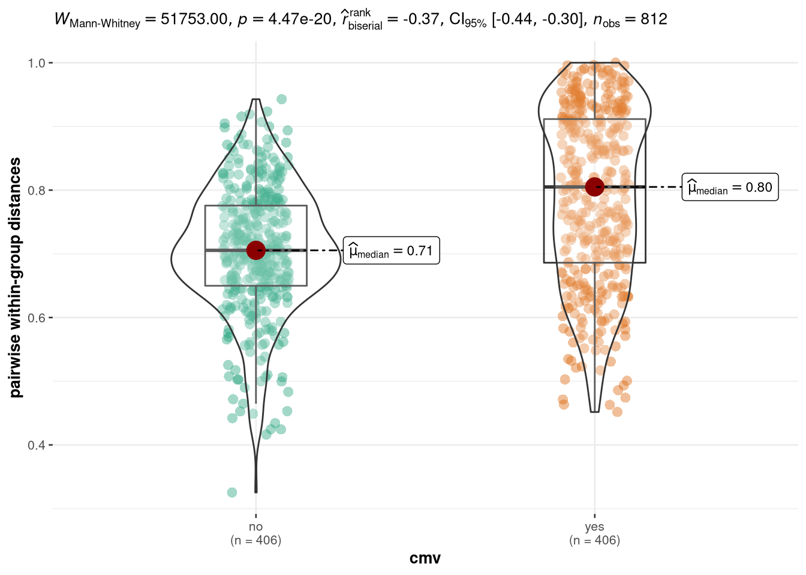

CMV vs Gene Richness
Carlos Blázquez Bondia
2022-11-30
Last updated: 2022-12-15
Checks: 6 1
Knit directory: advanz4/
This reproducible R Markdown analysis was created with workflowr (version 1.7.0). The Checks tab describes the reproducibility checks that were applied when the results were created. The Past versions tab lists the development history.
The R Markdown file has unstaged changes. To know which version of the R Markdown file created these results, you’ll want to first commit it to the Git repo. If you’re still working on the analysis, you can ignore this warning. When you’re finished, you can run wflow_publish to commit the R Markdown file and build the HTML.
Great job! The global environment was empty. Objects defined in the global environment can affect the analysis in your R Markdown file in unknown ways. For reproduciblity it’s best to always run the code in an empty environment.
The command set.seed(20211203) was run prior to running the code in the R Markdown file. Setting a seed ensures that any results that rely on randomness, e.g. subsampling or permutations, are reproducible.
Great job! Recording the operating system, R version, and package versions is critical for reproducibility.
Nice! There were no cached chunks for this analysis, so you can be confident that you successfully produced the results during this run.
Great job! Using relative paths to the files within your workflowr project makes it easier to run your code on other machines.
Great! You are using Git for version control. Tracking code development and connecting the code version to the results is critical for reproducibility.
The results in this page were generated with repository version e95b1c9. See the Past versions tab to see a history of the changes made to the R Markdown and HTML files.
Note that you need to be careful to ensure that all relevant files for the analysis have been committed to Git prior to generating the results (you can use wflow_publish or wflow_git_commit). workflowr only checks the R Markdown file, but you know if there are other scripts or data files that it depends on. Below is the status of the Git repository when the results were generated:
Ignored files:
Ignored: .RData
Ignored: .Rhistory
Ignored: .Rproj.user/
Ignored: analysis/.Rhistory
Ignored: analysis/420_Taxonomy_DA_cache/
Ignored: analysis/505_Adenovirus_Analysis_cache/
Ignored: analysis/510_Function_DA_cache/
Ignored: analysis/output/mre_data/SpeciesQuantification/Metaphlan3/NMDS/
Ignored: data/mre.rds
Ignored: data/signif_paths.rds
Unstaged changes:
Modified: analysis/316_GeneRichness_vs_CMV.Rmd
Modified: output/mre_data/CatalogMapping/IGC/lmm/lmm_time_point_by_group.pdf
Note that any generated files, e.g. HTML, png, CSS, etc., are not included in this status report because it is ok for generated content to have uncommitted changes.
These are the previous versions of the repository in which changes were made to the R Markdown (analysis/316_GeneRichness_vs_CMV.Rmd) and HTML (docs/316_GeneRichness_vs_CMV.html) files. If you’ve configured a remote Git repository (see ?wflow_git_remote), click on the hyperlinks in the table below to view the files as they were in that past version.
| File | Version | Author | Date | Message |
|---|---|---|---|---|
| Rmd | e95b1c9 | cblazquez | 2022-12-14 | compiled CMV file |
| html | e95b1c9 | cblazquez | 2022-12-14 | compiled CMV file |
| Rmd | a87f1a4 | cblazquez | 2022-12-14 | Added CMV results |
| Rmd | 1343ce4 | cblazquez-irsi | 2022-12-13 | expaded o CMV |
| Rmd | 024b107 | cblazquez-irsi | 2022-12-01 | Started CMV and updated metadata |
#### This chunk is for updating the mre internally as new variables come out. Once the final mre is done this chunk will be removed.
devtools::load_all("../WMGSPipeline/")suggested package selbal ✔suggested package DataExplorer ✔suggested package lme4 ✔suggested package merTools ✔mymre <- filter_samples(mre = mymre, sample_ids = metadata$SampleID)
mymre@metadata@metadata_df <- as_tibble(metadata)
mymre@metadata@categorical_vals <- here::here("Metadata", "CategoricalVariables.txt") %>%
read.delim(., header = T) %>%
tibble()
mymre@metadata@numeric_vals <- here::here("Metadata", "NumericalVariables.txt") %>%
read.delim(., header = T) %>%
tibble()
mymre@metadata@longitudinal_vals <- here::here("Metadata", "LongitudinalVariables.txt") %>%
read.delim(., header = T) %>%
tibble()
mymre@taxa@metaphlan@phyloseq@sam_data <- phyloseq::sample_data(metadata)presence of CMV at BL interaction with GR
First we’ll compare those samples at basal in gene richness as whether or not they have CMV presence.
working_df <-
TableList %>%
purrr::pluck("group") %>%
left_join(metadata[,c("SampleID","cmv_bl")])
bl_df <-
working_df %>%
dplyr::filter(long_var == 0) %>%
dplyr::mutate(has_cmv = case_when(
cmv_bl == 0 ~ "no",
cmv_bl > 0 ~ "yes"
))
bl_df %>%
ggplot(aes(x = has_cmv, y = richness, fill = has_cmv)) +
geom_violin(alpha = 1, draw_quantiles = c(.25,.5,.75), trim = F) +
ggpubr::stat_compare_means(method="wilcox.test") +
theme_bw() +
labs(x = "CMV presence", fill = "CMV presence")
| Version | Author | Date |
|---|---|---|
| e95b1c9 | cblazquez | 2022-12-14 |
bl_df %>%
ggplot(aes(x=richness, y = cmv_bl,color=cat_var)) +
geom_point() +
geom_smooth(method = "glm")
| Version | Author | Date |
|---|---|---|
| e95b1c9 | cblazquez | 2022-12-14 |
cor.test(x=bl_df$richness, y=bl_df$cmv_bl)
Pearson's product-moment correlation
data: bl_df$richness and bl_df$cmv_bl
t = -0.8449, df = 68, p-value = 0.4011
alternative hypothesis: true correlation is not equal to 0
95 percent confidence interval:
-0.3290196 0.1363132
sample estimates:
cor
-0.1019255 Overall, doesn’t seem like there is a difference in Gene Richness between CMV+ and CMV-, although the p.val is close to 0.05.
CMV along the study
We’ll perform a quick view of how CMV evolves along the timepoints and try to find if they correlate with Gene Richness

| Version | Author | Date |
|---|---|---|
| e95b1c9 | cblazquez | 2022-12-14 |
Apparently, there’s barely any CMV viral load outside of baseline. It appears there is some value at week 48 but a closer look shows all entries at this timepoint have a VL of 35, which is the standard result when measurement is below LLOQ (<35). We’ll stick to BL comparisons.
Beta diversity ordination by CMV presence
bl_df <-
metadata %>%
mutate(cmv_bl_c = case_when(cmv_bl == 0 ~ "no", cmv_bl > 0 ~ "yes")) %>%
dplyr::filter(time_point == 0)
basal_mre <-
metar::filter_samples(mre = mymre, sample_ids = bl_df$SampleID)
basal_mre@metadata@metadata_df <- tibble(bl_df)
basal_mre@metadata@categorical_vals <- tibble(CategoricalVariable = c("cmv_bl_c", "time_point"), PaletteName = c("Accent", "Set1"))
add_num(basal_mre, c("HIV_VL","CMV_VL"), palette = c("Set1","Set1"))MetarSet-class experimental-level object
[MetadataSet ]: 79 samples and 9 selected variables
[DiversitySet ]:
✔ igc: 3037 observations
✖ virgo: 0 observations
✖ dada2: 0 observations
[TaxaSet ]:
✔ metaphlan: phyloseq object with 354 taxa and 79 samples
✖ kraken: no phyloseq object available
✖ bracken: no phyloseq object available
✔ motus: phyloseq object with 1176 taxa and 79 samples
✖ dada2: no phyloseq object available
[GeneFunctionSet ]:
✔ humann: 6235 kegg_id, 0 cog_id and 0 eggnog_id
✔ igc: 6264 kegg_id, 0 cog_id and 0 eggnog_id
✖ virgo: no functional data aviable
✖ fmap: no functional data aviable phy <- get_phyloseq(basal_mre, type = "metaphlan")
phy@sam_data <- phyloseq::sample_data(bl_df)getAbundances<-function(phyloseq, level){
collapsedPhyloseq<- phyloseq::tax_glom(phyloseq, level)
OtuTable<- phyloseq::otu_table(collapsedPhyloseq) %>%
magrittr::set_rownames(as.character(phyloseq::tax_table(collapsedPhyloseq)[,level])) %>%
as.data.frame()
return(OtuTable)
}
myAbundanceDF<- getAbundances(phy, "Species")
myNMDS <- myAbundanceDF %>%
t() %>%
as.data.frame() %>%
# vegan::vegdist(., method = "bray") %>%
metaMDS(.,trymax=800, distance = "bray",
k = 2) %>%
pluck("points") %>%
as.data.frame()
# NMDS = data.frame(NMDS1 = dim_NMDS$points[,1], NMDS2 = dim_NMDS$points[,2])
BiPlotCoords<- envfit(myNMDS, t(myAbundanceDF), perm=999)
BiPlotCoordsDF <- c("MDS1","MDS2","r","pvals") %>%
set_names() %>%
map_dfr(., ~ {
if(.x %in% c("MDS1","MDS2")){
BiPlotCoords$vectors$arrows[,.x] %>%
as.numeric()
} else{
BiPlotCoords$vectors %>%
pluck(.x) %>%
as.numeric()
}
}) %>%
as.data.frame() %>%
set_names(nm=c("NMDS1","NMDS2","r","p")) %>%
dplyr::mutate(Dim1 = NMDS1*sqrt(r),
Dim2 = NMDS2*sqrt(r),
species = rownames(myAbundanceDF))
myBrayDistMat <-vegdist(wisconsin(sqrt(t(myAbundanceDF))))cat_df <- tibble(CategoricalVariable = c("cmv_bl_c","time_point"), PaletteName = c("Accent","Set1"))
cat_var <- "cmv_bl_c"
link_var <- "record_id"
id_var <- "SampleID"
myPal<-RColorBrewer::brewer.pal(name = cat_df$PaletteName[1],
n=length(unique(metadata[,cat_var])))
myNMDS <- myAbundanceDF %>%
t() %>%
as.data.frame() %>%
# vegan::vegdist(., method = "bray") %>%
metaMDS(.,trymax=800, distance = "bray",
k = 2) %>%
pluck("points") %>%
as.data.frame()
myNMDS_DF <- myNMDS %>%
rownames_to_column(var = id_var) %>%
dplyr::full_join(., bl_df, by =id_var) %>%
dplyr::select(SampleID = id_var,
NMDS1 = MDS1,
NMDS2 = MDS2,
linkVar = !!sym(link_var),
catVar = cmv_bl_c,
LongVar = long_var)
myXmin<-min(myNMDS$MDS1)
# +(max(dim_NMDS$points[,1])-min(dim_NMDS$points[,1]))/20
myYmin<-max(myNMDS$MDS2)-(max(myNMDS$MDS1)-min(myNMDS$MDS1))
myAdonis<- adonis2(myBrayDistMat~ catVar, data = myNMDS_DF) %>%
slice(1L) %>%
as.data.frame() %>%
magrittr::set_rownames(cat_var)
myNMDSplot<-ggplot(myNMDS_DF, aes(x=NMDS1, y=NMDS2)) +
geom_point(aes(color=catVar, shape = as.factor(LongVar))) +
theme_bw()+
theme(panel.border=element_blank(),
panel.grid.major=element_blank(),
panel.grid.minor=element_blank(),
axis.line=element_line(colour="black"),
axis.text.x=element_text(size=11),
axis.text.y=element_text(size=11),
axis.title.x=element_text(size=11),
axis.title.y=element_text(size=11),
legend.text=element_text(size=11,face="italic"),
legend.title=element_text(size=11))+
stat_ellipse(geom="polygon",alpha=0.15,color="black",aes(fill=catVar),level=0.95)+
# ggtitle(expression(atop("Species composition",atop(italic("all samples"))))) +
theme(plot.title=element_text(lineheight=1,face="bold",size=13))+
coord_fixed()+
labs(fill = cat_var, color=cat_var, shape = long_var) +
scale_color_brewer(palette = "Accent") +
scale_fill_brewer(palette = "Accent") +
annotation_custom(gridExtra::tableGrob(round(myAdonis,3),
theme = ttheme_default(base_size = 10)),ymin = 1)While it seems the samples with detectable CMV are more disprerse along the ordination, Adonis seems unable to find a significance. It may be due lo low sample count.
cmv_pos <- bl_df %>%
dplyr::filter(cmv_bl_c == "yes") %>%
dplyr::pull(SampleID)
cmv_neg <- bl_df %>%
dplyr::filter(cmv_bl_c == "no") %>%
dplyr::pull(SampleID)
gdata::upperTriangle(myBrayDistMat, byrow = T) %>% as.matrix() [,1]
[1,] 0.6777560
[2,] 0.8912630
[3,] 0.8893334
[4,] 0.5713374
[5,] 0.7447892
[6,] 0.9709112
[7,] 0.7511026
[8,] 0.6222230
[9,] 0.5348515
[10,] 0.6980897
[11,] 0.6418654
[12,] 0.6185074
[13,] 0.8213363
[14,] 0.8506770
[15,] 0.5605398
[16,] 0.8244699
[17,] 0.6877086
[18,] 0.7173935
[19,] 0.6759711
[20,] 0.8661012
[21,] 0.7862877
[22,] 0.6894510
[23,] 0.8130642
[24,] 0.6323463
[25,] 0.7023910
[26,] 0.9843907
[27,] 0.7571884
[28,] 0.5496670
[29,] 0.5757716
[30,] 0.7149174
[31,] 0.5707562
[32,] 0.6070498
[33,] 0.5325473
[34,] 0.9481552
[35,] 0.7274317
[36,] 0.8433106
[37,] 0.9514258
[38,] 0.5835679
[39,] 0.6583155
[40,] 0.6843088
[41,] 0.4809494
[42,] 0.7335354
[43,] 0.5472662
[44,] 0.5787950
[45,] 0.9362162
[46,] 0.7687833
[47,] 0.5373034
[48,] 0.8110979
[49,] 0.8228736
[50,] 0.7618850
[51,] 0.7469134
[52,] 0.5027506
[53,] 0.5812301
[54,] 0.6782612
[55,] 0.6653185
[56,] 0.5228924
[57,] 0.5808858
[58,] 0.8720052
[59,] 0.6324227
[60,] 0.5864559
[61,] 0.5985955
[62,] 0.7465172
[63,] 0.4247152
[64,] 0.5855218
[65,] 0.9312833
[66,] 0.9479208
[67,] 0.5571647
[68,] 0.6664949
[69,] 0.5441860
[70,] 0.4906121
[71,] 0.4999168
[72,] 0.5077163
[73,] 0.4489370
[74,] 0.5510674
[75,] 0.4641429
[76,] 0.5492098
[77,] 0.9672571
[78,] 0.6653296
[79,] 0.5688239
[80,] 0.8717063
[81,] 0.9910430
[82,] 0.7522897
[83,] 0.6028138
[84,] 0.5728817
[85,] 0.7339683
[86,] 0.6537229
[87,] 0.6843558
[88,] 0.8389665
[89,] 0.8830321
[90,] 0.5378324
[91,] 0.8664663
[92,] 0.6289035
[93,] 0.6468029
[94,] 0.6957177
[95,] 0.9198293
[96,] 0.7995074
[97,] 0.6518992
[98,] 0.8229410
[99,] 0.6451634
[100,] 0.6744036
[101,] 1.0000000
[102,] 0.6576257
[103,] 0.4863914
[104,] 0.4955584
[105,] 0.6985986
[106,] 0.5693262
[107,] 0.6399017
[108,] 0.4898020
[109,] 0.9572137
[110,] 0.7124354
[111,] 0.9132625
[112,] 0.9852653
[113,] 0.5956398
[114,] 0.6022947
[115,] 0.6710289
[116,] 0.4336018
[117,] 0.7841974
[118,] 0.4821910
[119,] 0.5254282
[120,] 0.9653250
[121,] 0.7794404
[122,] 0.6393831
[123,] 0.8408720
[124,] 0.7879218
[125,] 0.6768591
[126,] 0.6947344
[127,] 0.4526890
[128,] 0.5905055
[129,] 0.7368254
[130,] 0.6399168
[131,] 0.4447305
[132,] 0.5572584
[133,] 0.8712546
[134,] 0.6505006
[135,] 0.5933342
[136,] 0.6876448
[137,] 0.7165686
[138,] 0.3253500
[139,] 0.5209672
[140,] 0.9818457
[141,] 0.9863233
[142,] 0.4340658
[143,] 0.6686332
[144,] 0.5974920
[145,] 0.4915811
[146,] 0.4014430
[147,] 0.4647021
[148,] 0.4420023
[149,] 0.5021366
[150,] 0.5750889
[151,] 0.4997084
[152,] 0.9828434
[153,] 0.9128180
[154,] 0.9221730
[155,] 0.6010188
[156,] 0.7773291
[157,] 0.6684611
[158,] 0.6469913
[159,] 0.6281780
[160,] 0.7218014
[161,] 0.7702715
[162,] 0.7206194
[163,] 0.6352043
[164,] 0.7302683
[165,] 0.6515247
[166,] 0.6305013
[167,] 0.6718899
[168,] 0.8120854
[169,] 0.7559356
[170,] 0.7241025
[171,] 0.7695031
[172,] 0.6938613
[173,] 0.7484411
[174,] 0.9384644
[175,] 0.7591803
[176,] 0.6127700
[177,] 0.7209016
[178,] 0.7395389
[179,] 0.6115601
[180,] 0.7914299
[181,] 0.6768129
[182,] 0.8767275
[183,] 0.7350665
[184,] 0.8405668
[185,] 0.8629179
[186,] 0.6855342
[187,] 0.6701960
[188,] 0.7018594
[189,] 0.6694873
[190,] 0.7425727
[191,] 0.6403853
[192,] 0.6096408
[193,] 0.8057591
[194,] 0.7154531
[195,] 0.7248253
[196,] 0.7056902
[197,] 0.7619183
[198,] 0.7086847
[199,] 0.6714202
[200,] 0.6604720
[201,] 0.7696165
[202,] 0.7557642
[203,] 0.7537447
[204,] 0.6504865
[205,] 0.6992384
[206,] 0.8132006
[207,] 0.6495781
[208,] 0.6184823
[209,] 0.7158711
[210,] 0.7028420
[211,] 0.6604666
[212,] 0.6246446
[213,] 0.8229577
[214,] 0.8734662
[215,] 0.6045755
[216,] 0.7081908
[217,] 0.7230448
[218,] 0.6955323
[219,] 0.6831704
[220,] 0.6542674
[221,] 0.7538461
[222,] 0.6138451
[223,] 0.6982906
[224,] 0.7262080
[225,] 0.9066264
[226,] 0.8311080
[227,] 0.8898488
[228,] 0.7478095
[229,] 0.8276338
[230,] 0.8963897
[231,] 0.9751021
[232,] 0.8800904
[233,] 0.8595761
[234,] 0.9281517
[235,] 0.8974441
[236,] 0.8866567
[237,] 0.9554350
[238,] 0.8217157
[239,] 0.8146898
[240,] 0.9629476
[241,] 0.9506171
[242,] 0.8243624
[243,] 0.8259983
[244,] 0.7870667
[245,] 0.8985537
[246,] 0.9106148
[247,] 0.9702389
[248,] 0.9662285
[249,] 0.8731007
[250,] 0.8947815
[251,] 0.9848657
[252,] 0.9297979
[253,] 0.8726592
[254,] 0.9298381
[255,] 0.7594049
[256,] 0.8169543
[257,] 0.8816156
[258,] 0.9393617
[259,] 0.8872314
[260,] 0.9455175
[261,] 0.7102222
[262,] 0.9758703
[263,] 0.9230129
[264,] 0.8968406
[265,] 0.8329456
[266,] 0.8485827
[267,] 0.9020001
[268,] 0.8620500
[269,] 0.9437312
[270,] 0.8740451
[271,] 0.9371175
[272,] 0.8881959
[273,] 0.7838360
[274,] 0.8728753
[275,] 0.9480390
[276,] 0.9224240
[277,] 0.9384363
[278,] 0.8869744
[279,] 0.9105717
[280,] 0.8614553
[281,] 0.8545582
[282,] 0.9715097
[283,] 0.9504645
[284,] 0.8153269
[285,] 0.8044609
[286,] 0.9674524
[287,] 0.8882427
[288,] 0.8561163
[289,] 0.9121537
[290,] 0.9576607
[291,] 0.9349103
[292,] 0.9870804
[293,] 0.9209641
[294,] 0.8888328
[295,] 0.9638312
[296,] 0.9062073
[297,] 0.9071875
[298,] 0.8306432
[299,] 0.8616675
[300,] 0.8830425
[301,] 0.9274326
[302,] 0.8899369
[303,] 0.8292125
[304,] 0.9116248
[305,] 0.8677033
[306,] 0.8874024
[307,] 0.8446502
[308,] 0.8403444
[309,] 0.8763406
[310,] 0.8373663
[311,] 0.8080646
[312,] 0.8645603
[313,] 0.7915212
[314,] 0.8009745
[315,] 0.9178264
[316,] 0.9235818
[317,] 0.9764121
[318,] 0.9072592
[319,] 0.9000928
[320,] 0.9594557
[321,] 0.8967076
[322,] 0.8826534
[323,] 0.8655723
[324,] 0.8792256
[325,] 0.9411695
[326,] 0.8910185
[327,] 0.8493001
[328,] 0.8533575
[329,] 0.9419487
[330,] 0.8011238
[331,] 0.9292937
[332,] 0.9404096
[333,] 0.9293526
[334,] 0.8701582
[335,] 0.8883085
[336,] 0.8607010
[337,] 0.9073256
[338,] 0.9244376
[339,] 0.8167967
[340,] 0.9359101
[341,] 0.9240131
[342,] 0.8243132
[343,] 0.8651824
[344,] 0.9100173
[345,] 0.8538411
[346,] 0.9107588
[347,] 0.9135623
[348,] 0.8497466
[349,] 0.8747111
[350,] 0.9000394
[351,] 0.9279489
[352,] 0.8951951
[353,] 0.8852913
[354,] 0.9468976
[355,] 0.9046287
[356,] 0.8903414
[357,] 0.8634251
[358,] 0.8793801
[359,] 0.9341828
[360,] 0.8692084
[361,] 0.9127139
[362,] 0.8994694
[363,] 0.8652727
[364,] 0.9552361
[365,] 0.8675963
[366,] 0.6733039
[367,] 0.9204628
[368,] 0.7080367
[369,] 0.6757660
[370,] 0.5583051
[371,] 0.6754922
[372,] 0.6276178
[373,] 0.6790767
[374,] 0.7438261
[375,] 0.7653987
[376,] 0.6179449
[377,] 0.7452125
[378,] 0.6087198
[379,] 0.6692902
[380,] 0.6389445
[381,] 0.9897820
[382,] 0.7462344
[383,] 0.6351684
[384,] 0.6437422
[385,] 0.7022641
[386,] 0.5276736
[387,] 0.7019369
[388,] 0.6125185
[389,] 0.8452031
[390,] 0.7724837
[391,] 0.8159087
[392,] 0.9719854
[393,] 0.6543185
[394,] 0.6626472
[395,] 0.6339225
[396,] 0.6099247
[397,] 0.7227627
[398,] 0.6274619
[399,] 0.5595988
[400,] 0.9113023
[401,] 0.7246430
[402,] 0.5487025
[403,] 0.7505514
[404,] 0.8124138
[405,] 0.7179800
[406,] 0.7318488
[407,] 0.6017554
[408,] 0.6825888
[409,] 0.7256247
[410,] 0.6768179
[411,] 0.5925072
[412,] 0.5812365
[413,] 0.8028816
[414,] 0.6466011
[415,] 0.5616818
[416,] 0.5879684
[417,] 0.6859151
[418,] 0.5874687
[419,] 0.5923786
[420,] 0.9154002
[421,] 0.9546653
[422,] 0.6027549
[423,] 0.6650950
[424,] 0.6206844
[425,] 0.6236060
[426,] 0.6325962
[427,] 0.5938618
[428,] 0.6933280
[429,] 0.5991287
[430,] 0.5520181
[431,] 0.6022669
[432,] 0.9746004
[433,] 0.8414743
[434,] 0.8413663
[435,] 0.9234464
[436,] 0.8036825
[437,] 0.7869203
[438,] 0.7854905
[439,] 0.7120189
[440,] 0.8611240
[441,] 0.7910134
[442,] 0.9128808
[443,] 0.7747705
[444,] 0.8416862
[445,] 0.8982529
[446,] 0.7766741
[447,] 0.7337748
[448,] 0.8606334
[449,] 0.8604694
[450,] 0.7337260
[451,] 0.7218228
[452,] 0.8292706
[453,] 0.9196009
[454,] 0.8335504
[455,] 0.8849349
[456,] 0.5953766
[457,] 0.8172940
[458,] 0.7238726
[459,] 0.8187402
[460,] 0.7929627
[461,] 0.8672986
[462,] 0.6450038
[463,] 0.8978534
[464,] 0.8811568
[465,] 0.8027808
[466,] 0.8246016
[467,] 0.7354653
[468,] 0.8904234
[469,] 0.8990460
[470,] 0.8854316
[471,] 0.8876560
[472,] 0.8798176
[473,] 0.8055820
[474,] 0.5943500
[475,] 0.7852128
[476,] 0.8395262
[477,] 0.7877887
[478,] 0.8810388
[479,] 0.7304502
[480,] 0.7640318
[481,] 0.6594500
[482,] 0.7739570
[483,] 0.8936644
[484,] 0.8278986
[485,] 0.7913167
[486,] 0.8245004
[487,] 0.8605186
[488,] 0.8311802
[489,] 0.7571127
[490,] 0.8244480
[491,] 0.8660588
[492,] 0.8627809
[493,] 0.9070126
[494,] 0.8035675
[495,] 0.7646735
[496,] 0.8761537
[497,] 0.9659829
[498,] 0.8261945
[499,] 0.9851380
[500,] 0.9326717
[501,] 0.7826693
[502,] 0.8194124
[503,] 0.9065486
[504,] 0.8468699
[505,] 0.7804955
[506,] 0.9643847
[507,] 0.8710282
[508,] 0.8708104
[509,] 0.9275064
[510,] 0.8499500
[511,] 0.7764262
[512,] 0.8487616
[513,] 0.9562131
[514,] 0.8547286
[515,] 0.8951295
[516,] 0.8480255
[517,] 0.9045407
[518,] 0.8956862
[519,] 0.9242247
[520,] 0.9985323
[521,] 0.9124454
[522,] 0.9605439
[523,] 1.0000000
[524,] 0.9445619
[525,] 0.8430055
[526,] 0.9922009
[527,] 0.9764177
[528,] 0.8978510
[529,] 0.8257570
[530,] 0.9613270
[531,] 0.8585542
[532,] 0.9414617
[533,] 0.8560351
[534,] 0.8869060
[535,] 0.9894372
[536,] 0.9845623
[537,] 0.8102625
[538,] 0.9373847
[539,] 0.9513089
[540,] 0.8741525
[541,] 0.9116413
[542,] 0.8831820
[543,] 0.9085561
[544,] 0.9018342
[545,] 0.8345807
[546,] 0.9737913
[547,] 0.8722976
[548,] 0.8836668
[549,] 0.9363475
[550,] 0.9665469
[551,] 0.8717832
[552,] 0.9648710
[553,] 0.9367937
[554,] 0.9987027
[555,] 0.9615570
[556,] 0.9945588
[557,] 0.9499946
[558,] 0.9959856
[559,] 0.9862519
[560,] 0.8691692
[561,] 0.7543091
[562,] 0.7697187
[563,] 0.6980517
[564,] 0.7521164
[565,] 0.7238612
[566,] 0.7700962
[567,] 0.7429799
[568,] 0.7269363
[569,] 0.7447998
[570,] 0.7406669
[571,] 0.7015512
[572,] 0.7363166
[573,] 0.7745926
[574,] 0.7966100
[575,] 0.8648355
[576,] 0.8288859
[577,] 0.7860915
[578,] 0.8094001
[579,] 0.9706475
[580,] 0.8813573
[581,] 0.7470753
[582,] 0.7467922
[583,] 0.8466027
[584,] 0.7019947
[585,] 0.8288789
[586,] 0.7889656
[587,] 0.7016527
[588,] 0.7740155
[589,] 0.8972633
[590,] 0.9708234
[591,] 0.7038617
[592,] 0.6991299
[593,] 0.6834828
[594,] 0.7693989
[595,] 0.8087189
[596,] 0.7743358
[597,] 0.8305103
[598,] 0.7884751
[599,] 0.7266539
[600,] 0.7023323
[601,] 0.7314246
[602,] 0.7828550
[603,] 0.7686840
[604,] 0.7523200
[605,] 0.6722738
[606,] 0.6904236
[607,] 0.7535733
[608,] 0.7576453
[609,] 0.9433945
[610,] 0.9667612
[611,] 0.7765398
[612,] 0.6723999
[613,] 0.7005303
[614,] 0.7043755
[615,] 0.8121761
[616,] 0.7477466
[617,] 0.7740616
[618,] 0.8306876
[619,] 0.7810075
[620,] 0.8039105
[621,] 0.8967495
[622,] 0.6197449
[623,] 0.7902973
[624,] 0.7436780
[625,] 0.7809989
[626,] 0.8152024
[627,] 0.8950029
[628,] 0.5999002
[629,] 0.8502403
[630,] 0.7528357
[631,] 0.5935205
[632,] 0.7895071
[633,] 0.9082652
[634,] 0.8264594
[635,] 0.7993409
[636,] 0.8979115
[637,] 0.7111568
[638,] 0.8012187
[639,] 0.9958709
[640,] 0.7849685
[641,] 0.6715176
[642,] 0.6147212
[643,] 0.8131326
[644,] 0.6089462
[645,] 0.6349948
[646,] 0.6472203
[647,] 0.8691004
[648,] 0.7260692
[649,] 0.9483060
[650,] 0.9958709
[651,] 0.7115194
[652,] 0.6646379
[653,] 0.6910927
[654,] 0.6082563
[655,] 0.8066782
[656,] 0.6236056
[657,] 0.6417126
[658,] 0.9773026
[659,] 0.8049017
[660,] 0.6616228
[661,] 0.8213606
[662,] 0.8745454
[663,] 0.7903999
[664,] 0.7515666
[665,] 0.5762263
[666,] 0.7220399
[667,] 0.6877034
[668,] 0.9871472
[669,] 0.9899542
[670,] 0.6198517
[671,] 0.7483316
[672,] 0.6282855
[673,] 0.6212851
[674,] 0.6070831
[675,] 0.6572934
[676,] 0.5818690
[677,] 0.6878758
[678,] 0.6575723
[679,] 0.5835970
[680,] 0.9854541
[681,] 0.7339115
[682,] 0.6746883
[683,] 0.7160093
[684,] 0.8191435
[685,] 0.8524265
[686,] 0.5781406
[687,] 0.7968645
[688,] 0.6865448
[689,] 0.7630250
[690,] 0.6346105
[691,] 0.8350087
[692,] 0.8179236
[693,] 0.6877914
[694,] 0.8184937
[695,] 0.6924622
[696,] 0.7495885
[697,] 0.9813966
[698,] 0.7491290
[699,] 0.6074018
[700,] 0.6512974
[701,] 0.7338506
[702,] 0.5663874
[703,] 0.6491429
[704,] 0.5840985
[705,] 0.9205819
[706,] 0.7966394
[707,] 0.8134344
[708,] 0.9798099
[709,] 0.6453738
[710,] 0.6475225
[711,] 0.6768958
[712,] 0.5943172
[713,] 0.7540639
[714,] 0.6260694
[715,] 0.5320359
[716,] 0.9116882
[717,] 0.6966808
[718,] 0.5089299
[719,] 0.7948337
[720,] 0.7991505
[721,] 0.7196908
[722,] 0.7962330
[723,] 0.5842005
[724,] 0.5890727
[725,] 0.6758042
[726,] 0.7591696
[727,] 0.6031286
[728,] 0.6078748
[729,] 0.8483334
[730,] 0.6999809
[731,] 0.5936738
[732,] 0.6082277
[733,] 0.7423362
[734,] 0.5862969
[735,] 0.6204124
[736,] 0.5945704
[737,] 0.9586769
[738,] 0.6743962
[739,] 0.6920399
[740,] 0.7185549
[741,] 0.6600306
[742,] 0.6568310
[743,] 0.6414626
[744,] 0.6580884
[745,] 0.6802173
[746,] 0.6787959
[747,] 0.7182421
[748,] 0.7226755
[749,] 0.7099335
[750,] 0.7860382
[751,] 0.6881611
[752,] 0.6962995
[753,] 0.9569781
[754,] 0.8041150
[755,] 0.6602394
[756,] 0.7922873
[757,] 0.7216915
[758,] 0.6804070
[759,] 0.8451507
[760,] 0.7317102
[761,] 0.8276884
[762,] 0.7694112
[763,] 0.8625770
[764,] 0.9832512
[765,] 0.6781953
[766,] 0.6591973
[767,] 0.5654933
[768,] 0.7740440
[769,] 0.6478002
[770,] 0.7262742
[771,] 0.6969602
[772,] 0.9015082
[773,] 0.6873644
[774,] 0.7452105
[775,] 0.6693270
[776,] 0.8627543
[777,] 0.7625456
[778,] 0.7875261
[779,] 0.7191291
[780,] 0.7831331
[781,] 0.7032318
[782,] 0.7455154
[783,] 0.6804427
[784,] 0.6328679
[785,] 0.7436073
[786,] 0.6678382
[787,] 0.7130366
[788,] 0.7108216
[789,] 0.6948223
[790,] 0.7285313
[791,] 0.6375806
[792,] 0.9261223
[793,] 0.9328960
[794,] 0.6857571
[795,] 0.6651608
[796,] 0.7295591
[797,] 0.6672087
[798,] 0.7681802
[799,] 0.6983801
[800,] 0.7590531
[801,] 0.7466561
[802,] 0.7510805
[803,] 0.7425873
[804,] 0.7157699
[805,] 0.6914312
[806,] 0.6874183
[807,] 0.9421509
[808,] 0.7831244
[809,] 0.6149949
[810,] 0.7312624
[811,] 0.7171174
[812,] 0.6069709
[813,] 0.8023576
[814,] 0.6967873
[815,] 0.9108347
[816,] 0.7297275
[817,] 0.8440798
[818,] 0.9190277
[819,] 0.6710618
[820,] 0.6607169
[821,] 0.6309113
[822,] 0.6597134
[823,] 0.7430397
[824,] 0.6084230
[825,] 0.7257521
[826,] 0.9311860
[827,] 0.6847591
[828,] 0.6700016
[829,] 0.7355668
[830,] 0.8472843
[831,] 0.7544457
[832,] 0.7820788
[833,] 0.6882175
[834,] 0.7065666
[835,] 0.6984167
[836,] 0.6870961
[837,] 0.6465685
[838,] 0.6583607
[839,] 0.8210024
[840,] 0.6368172
[841,] 0.6454331
[842,] 0.6491533
[843,] 0.6451808
[844,] 0.6617689
[845,] 0.6755437
[846,] 0.8981088
[847,] 0.9845372
[848,] 0.6438646
[849,] 0.6471303
[850,] 0.6489993
[851,] 0.6240891
[852,] 0.7435401
[853,] 0.6543108
[854,] 0.7277757
[855,] 0.6605455
[856,] 0.6769715
[857,] 0.7046193
[858,] 0.9265281
[859,] 0.7562092
[860,] 0.7741284
[861,] 0.6883017
[862,] 0.7362969
[863,] 0.7421142
[864,] 0.6975557
[865,] 0.6390826
[866,] 0.6981879
[867,] 0.7370223
[868,] 0.7829525
[869,] 0.7064955
[870,] 0.6147648
[871,] 0.6058942
[872,] 0.6721658
[873,] 0.5930146
[874,] 0.7144349
[875,] 0.6747754
[876,] 0.6751456
[877,] 0.6844587
[878,] 0.8971749
[879,] 0.7203707
[880,] 0.6424799
[881,] 0.7940548
[882,] 0.8167887
[883,] 0.7302893
[884,] 0.8257877
[885,] 0.7272580
[886,] 0.7146996
[887,] 0.6677439
[888,] 0.6812776
[889,] 0.6416325
[890,] 0.6383625
[891,] 0.7605105
[892,] 0.6604411
[893,] 0.6808086
[894,] 0.6417002
[895,] 0.6539763
[896,] 0.6761679
[897,] 0.6716462
[898,] 0.9150281
[899,] 0.9747702
[900,] 0.6833616
[901,] 0.5907795
[902,] 0.5906716
[903,] 0.6199601
[904,] 0.7404857
[905,] 0.6668246
[906,] 0.7256276
[907,] 0.7203850
[908,] 0.6921251
[909,] 0.7344136
[910,] 0.9226037
[911,] 0.7435626
[912,] 0.8040908
[913,] 0.8021430
[914,] 0.7557453
[915,] 0.7186066
[916,] 0.7642064
[917,] 0.7469771
[918,] 0.8471257
[919,] 0.8229824
[920,] 0.8530887
[921,] 0.7233113
[922,] 0.8286318
[923,] 0.9611990
[924,] 0.8422721
[925,] 0.7929534
[926,] 0.8434506
[927,] 0.6625029
[928,] 0.7404861
[929,] 0.8552119
[930,] 0.8132251
[931,] 0.9069700
[932,] 0.8544827
[933,] 0.8819472
[934,] 0.9628275
[935,] 0.8331643
[936,] 0.8306203
[937,] 0.8163312
[938,] 0.8203092
[939,] 0.7991567
[940,] 0.6985841
[941,] 0.7755266
[942,] 0.7712901
[943,] 0.7051608
[944,] 0.7485738
[945,] 0.7662818
[946,] 0.8010402
[947,] 0.7052921
[948,] 0.9305232
[949,] 0.9254501
[950,] 0.7683282
[951,] 0.7026636
[952,] 0.7817010
[953,] 0.7895797
[954,] 0.8222781
[955,] 0.7955575
[956,] 0.8487380
[957,] 0.8062838
[958,] 0.7569045
[959,] 0.7866969
[960,] 0.9517130
[961,] 0.8147808
[962,] 0.7278478
[963,] 0.7159070
[964,] 0.7855162
[965,] 0.7774080
[966,] 0.6375842
[967,] 0.7731873
[968,] 0.8722832
[969,] 0.8035319
[970,] 0.7672903
[971,] 0.8041994
[972,] 0.9237087
[973,] 0.8951516
[974,] 0.8303464
[975,] 0.9199512
[976,] 0.8090285
[977,] 0.8424264
[978,] 0.9651592
[979,] 0.8660623
[980,] 0.7437889
[981,] 0.8600064
[982,] 0.8894747
[983,] 0.9722768
[984,] 0.7470485
[985,] 0.8066059
[986,] 0.7146255
[987,] 0.8976956
[988,] 0.7347620
[989,] 0.8677908
[990,] 0.8589725
[991,] 0.9284018
[992,] 0.7360884
[993,] 0.8717748
[994,] 0.6946565
[995,] 0.9371765
[996,] 0.8142038
[997,] 0.8294979
[998,] 0.8660195
[999,] 0.9151044
[1000,] 0.8125900
[1001,] 0.7639731
[1002,] 0.8873404
[1003,] 0.8465404
[1004,] 0.9178407
[1005,] 0.8532640
[1006,] 0.9011137
[1007,] 0.9133795
[1008,] 0.9045521
[1009,] 0.8201852
[1010,] 0.6427189
[1011,] 0.5544722
[1012,] 0.6866274
[1013,] 0.8781775
[1014,] 0.7503340
[1015,] 0.6338966
[1016,] 0.8257951
[1017,] 0.6331206
[1018,] 0.6798457
[1019,] 0.9935094
[1020,] 0.7151957
[1021,] 0.4355016
[1022,] 0.6487086
[1023,] 0.7261810
[1024,] 0.5920666
[1025,] 0.6270381
[1026,] 0.6281637
[1027,] 0.9356412
[1028,] 0.6758180
[1029,] 0.9503399
[1030,] 0.9953488
[1031,] 0.6150213
[1032,] 0.5932296
[1033,] 0.6425825
[1034,] 0.5492171
[1035,] 0.7988563
[1036,] 0.5245733
[1037,] 0.5601166
[1038,] 0.9611378
[1039,] 0.7533535
[1040,] 0.6569075
[1041,] 0.6982033
[1042,] 0.8233357
[1043,] 0.6820491
[1044,] 0.7084791
[1045,] 0.4932559
[1046,] 0.6879056
[1047,] 0.7959544
[1048,] 0.6708462
[1049,] 0.5236694
[1050,] 0.5849384
[1051,] 0.7879905
[1052,] 0.6864141
[1053,] 0.6179716
[1054,] 0.6926589
[1055,] 0.7009086
[1056,] 0.5013532
[1057,] 0.5662734
[1058,] 0.9900177
[1059,] 0.9868917
[1060,] 0.4819875
[1061,] 0.6608292
[1062,] 0.6514338
[1063,] 0.4853193
[1064,] 0.5211452
[1065,] 0.5400667
[1066,] 0.7763941
[1067,] 0.8558053
[1068,] 0.8492414
[1069,] 0.7814698
[1070,] 0.9465767
[1071,] 0.8569411
[1072,] 0.7733313
[1073,] 0.8249304
[1074,] 0.8580111
[1075,] 0.9670092
[1076,] 0.7854657
[1077,] 0.7332302
[1078,] 0.7556872
[1079,] 0.8656197
[1080,] 0.7858857
[1081,] 0.8081272
[1082,] 0.8329285
[1083,] 0.8903306
[1084,] 0.7533417
[1085,] 0.8018300
[1086,] 0.7012884
[1087,] 0.9520247
[1088,] 0.8181916
[1089,] 0.8999469
[1090,] 0.8259470
[1091,] 0.8552025
[1092,] 0.7712748
[1093,] 0.8074386
[1094,] 0.8084550
[1095,] 0.7896848
[1096,] 0.7060217
[1097,] 0.7261025
[1098,] 0.7577897
[1099,] 0.7047408
[1100,] 0.7432831
[1101,] 0.8511810
[1102,] 0.7980689
[1103,] 0.9034558
[1104,] 0.9493547
[1105,] 0.8342513
[1106,] 0.7017197
[1107,] 0.7611999
[1108,] 0.8288824
[1109,] 0.8749007
[1110,] 0.8380918
[1111,] 0.8342104
[1112,] 0.8282229
[1113,] 0.8101390
[1114,] 0.8759614
[1115,] 0.8911756
[1116,] 0.7561968
[1117,] 0.6661302
[1118,] 0.7502466
[1119,] 0.7138555
[1120,] 0.6990044
[1121,] 0.7983489
[1122,] 0.7166005
[1123,] 0.6870314
[1124,] 0.9903975
[1125,] 0.7651798
[1126,] 0.6443819
[1127,] 0.7860409
[1128,] 0.7225515
[1129,] 0.7063072
[1130,] 0.8609374
[1131,] 0.7823540
[1132,] 0.7312845
[1133,] 0.6619815
[1134,] 0.8040929
[1135,] 0.7382230
[1136,] 0.7336713
[1137,] 0.6844687
[1138,] 0.5928248
[1139,] 0.7794438
[1140,] 0.6358265
[1141,] 0.6384709
[1142,] 0.7172688
[1143,] 0.7093788
[1144,] 0.6924833
[1145,] 0.5616209
[1146,] 0.9202299
[1147,] 0.9705577
[1148,] 0.6496310
[1149,] 0.6355673
[1150,] 0.7423772
[1151,] 0.6433185
[1152,] 0.7179831
[1153,] 0.6717398
[1154,] 0.7296033
[1155,] 0.6162296
[1156,] 0.7531105
[1157,] 0.6639811
[1158,] 0.9421677
[1159,] 0.7280436
[1160,] 0.8658606
[1161,] 0.8076316
[1162,] 0.7252000
[1163,] 0.7860433
[1164,] 0.7509323
[1165,] 0.7508060
[1166,] 0.9926384
[1167,] 0.7849623
[1168,] 0.6044274
[1169,] 0.6159430
[1170,] 0.7703645
[1171,] 0.6126940
[1172,] 0.7800798
[1173,] 0.7435146
[1174,] 0.8619446
[1175,] 0.6648901
[1176,] 0.9428856
[1177,] 0.9959521
[1178,] 0.6945866
[1179,] 0.6286297
[1180,] 0.6302864
[1181,] 0.6891328
[1182,] 0.7772249
[1183,] 0.5987509
[1184,] 0.6541010
[1185,] 0.9727328
[1186,] 0.7133348
[1187,] 0.7302691
[1188,] 0.6820615
[1189,] 0.8458257
[1190,] 0.7598104
[1191,] 0.6413251
[1192,] 0.6590651
[1193,] 0.6893096
[1194,] 0.6729050
[1195,] 0.7059033
[1196,] 0.7330587
[1197,] 0.7088998
[1198,] 0.6271487
[1199,] 0.9045921
[1200,] 0.7099605
[1201,] 0.6877382
[1202,] 0.6272173
[1203,] 0.7906734
[1204,] 0.6804798
[1205,] 0.7115180
[1206,] 0.9469370
[1207,] 0.7953203
[1208,] 0.7059218
[1209,] 0.8023583
[1210,] 0.7563796
[1211,] 0.6768736
[1212,] 0.8085382
[1213,] 0.7138870
[1214,] 0.8225317
[1215,] 0.7895428
[1216,] 0.7826846
[1217,] 0.9065486
[1218,] 0.6980536
[1219,] 0.6534348
[1220,] 0.6580285
[1221,] 0.7130816
[1222,] 0.7401994
[1223,] 0.7202770
[1224,] 0.6823964
[1225,] 0.8848097
[1226,] 0.7028463
[1227,] 0.6382102
[1228,] 0.6651529
[1229,] 0.8624045
[1230,] 0.7651815
[1231,] 0.7716698
[1232,] 0.7392083
[1233,] 0.6777099
[1234,] 0.6652710
[1235,] 0.7244055
[1236,] 0.6702091
[1237,] 0.6477918
[1238,] 0.7838220
[1239,] 0.6829385
[1240,] 0.6337514
[1241,] 0.6184206
[1242,] 0.7237287
[1243,] 0.6985687
[1244,] 0.6274684
[1245,] 0.8682385
[1246,] 0.9199485
[1247,] 0.6801489
[1248,] 0.6656764
[1249,] 0.6221426
[1250,] 0.6812105
[1251,] 0.7406123
[1252,] 0.7893236
[1253,] 0.8590451
[1254,] 0.7644024
[1255,] 0.9090393
[1256,] 0.7692796
[1257,] 0.8193408
[1258,] 0.7229416
[1259,] 0.9209769
[1260,] 0.7343223
[1261,] 0.9078691
[1262,] 0.8879113
[1263,] 0.9079643
[1264,] 0.6922595
[1265,] 0.8141930
[1266,] 0.7487224
[1267,] 0.8896820
[1268,] 0.8476332
[1269,] 0.8728437
[1270,] 0.9269184
[1271,] 0.9043150
[1272,] 0.7580788
[1273,] 0.7783681
[1274,] 0.8419492
[1275,] 0.8050990
[1276,] 0.7283860
[1277,] 0.7819963
[1278,] 0.7814911
[1279,] 0.6902746
[1280,] 0.7099992
[1281,] 0.9335421
[1282,] 0.8331422
[1283,] 0.8284392
[1284,] 0.9571340
[1285,] 0.8642689
[1286,] 0.7142018
[1287,] 0.8223274
[1288,] 0.8139429
[1289,] 0.9470900
[1290,] 0.8702222
[1291,] 0.9542837
[1292,] 0.9009668
[1293,] 0.8658236
[1294,] 0.9218767
[1295,] 0.9093841
[1296,] 0.6247161
[1297,] 0.8143631
[1298,] 0.8005861
[1299,] 0.7718056
[1300,] 0.9684177
[1301,] 0.8604123
[1302,] 0.7034444
[1303,] 0.8361914
[1304,] 0.8061267
[1305,] 0.7970700
[1306,] 0.9087758
[1307,] 0.8044507
[1308,] 0.8739281
[1309,] 0.7891714
[1310,] 0.8824387
[1311,] 0.9536470
[1312,] 0.6763558
[1313,] 0.7468571
[1314,] 0.7748706
[1315,] 0.7951053
[1316,] 0.7099983
[1317,] 0.7968428
[1318,] 0.6962497
[1319,] 0.9129357
[1320,] 0.9781818
[1321,] 0.7636436
[1322,] 0.6789406
[1323,] 0.8086597
[1324,] 0.7618688
[1325,] 0.7986518
[1326,] 0.7264827
[1327,] 0.7941008
[1328,] 0.7908252
[1329,] 0.8386938
[1330,] 0.8061520
[1331,] 0.9146791
[1332,] 0.8308182
[1333,] 0.7144028
[1334,] 0.7057354
[1335,] 0.9680730
[1336,] 0.7521557
[1337,] 0.6402387
[1338,] 0.7599868
[1339,] 0.7603850
[1340,] 0.7331772
[1341,] 0.8037968
[1342,] 0.6935397
[1343,] 0.9732779
[1344,] 0.7339898
[1345,] 0.8447160
[1346,] 0.9504406
[1347,] 0.7223039
[1348,] 0.6290902
[1349,] 0.7093942
[1350,] 0.7345006
[1351,] 0.8044731
[1352,] 0.6773084
[1353,] 0.6559038
[1354,] 0.9414072
[1355,] 0.7415836
[1356,] 0.7337480
[1357,] 0.6528015
[1358,] 0.8625731
[1359,] 0.8263392
[1360,] 0.7093167
[1361,] 0.6660582
[1362,] 0.7049099
[1363,] 0.7262804
[1364,] 0.7388930
[1365,] 0.7099633
[1366,] 0.6428488
[1367,] 0.8102945
[1368,] 0.7204181
[1369,] 0.7250286
[1370,] 0.7281765
[1371,] 0.8790153
[1372,] 0.7793634
[1373,] 0.7859120
[1374,] 0.9088122
[1375,] 0.8243662
[1376,] 0.8728573
[1377,] 0.8436414
[1378,] 0.8233935
[1379,] 0.9044259
[1380,] 0.7380281
[1381,] 0.7730228
[1382,] 0.7059320
[1383,] 0.7922054
[1384,] 0.6981265
[1385,] 0.7859556
[1386,] 0.8368784
[1387,] 0.8815217
[1388,] 0.7692172
[1389,] 0.7938182
[1390,] 0.7839683
[1391,] 0.7935805
[1392,] 0.8313066
[1393,] 0.7868022
[1394,] 0.8096699
[1395,] 0.8197626
[1396,] 0.7197488
[1397,] 0.7524457
[1398,] 0.8297517
[1399,] 0.7419444
[1400,] 0.8854091
[1401,] 0.7837828
[1402,] 0.7506256
[1403,] 0.7718362
[1404,] 0.7435676
[1405,] 0.8460409
[1406,] 0.7748926
[1407,] 0.9161346
[1408,] 0.9645655
[1409,] 0.7914535
[1410,] 0.7921004
[1411,] 0.7597598
[1412,] 0.7378855
[1413,] 0.8803304
[1414,] 0.8290600
[1415,] 0.8581164
[1416,] 0.7561960
[1417,] 0.8124095
[1418,] 0.8740532
[1419,] 0.9265285
[1420,] 0.6418531
[1421,] 0.9531232
[1422,] 0.7151135
[1423,] 0.5695793
[1424,] 0.7589730
[1425,] 0.6845470
[1426,] 0.6022170
[1427,] 0.6637712
[1428,] 0.6503550
[1429,] 0.6459203
[1430,] 0.6514196
[1431,] 0.8061013
[1432,] 0.7136081
[1433,] 0.6335727
[1434,] 0.6965453
[1435,] 0.6896055
[1436,] 0.6215680
[1437,] 0.5976796
[1438,] 0.9335756
[1439,] 0.9255791
[1440,] 0.5863163
[1441,] 0.6022260
[1442,] 0.6597680
[1443,] 0.6323308
[1444,] 0.6123594
[1445,] 0.6569125
[1446,] 0.7099597
[1447,] 0.5944592
[1448,] 0.6366000
[1449,] 0.6486198
[1450,] 0.9626992
[1451,] 0.9090029
[1452,] 0.6845780
[1453,] 0.6940522
[1454,] 0.7668202
[1455,] 0.7038972
[1456,] 0.7013017
[1457,] 0.7996203
[1458,] 0.7020989
[1459,] 0.9058692
[1460,] 0.7263310
[1461,] 0.8641502
[1462,] 0.8892632
[1463,] 0.6654791
[1464,] 0.6826877
[1465,] 0.6109994
[1466,] 0.6734906
[1467,] 0.7430282
[1468,] 0.6295439
[1469,] 0.6574887
[1470,] 0.9311478
[1471,] 0.7302531
[1472,] 0.7513097
[1473,] 0.7721574
[1474,] 0.8066193
[1475,] 0.8143513
[1476,] 0.6803205
[1477,] 0.6937495
[1478,] 0.8160128
[1479,] 0.7783186
[1480,] 0.6873484
[1481,] 0.7003709
[1482,] 0.6142697
[1483,] 0.8451148
[1484,] 0.7203437
[1485,] 0.7375475
[1486,] 0.9897699
[1487,] 0.9546722
[1488,] 0.9115686
[1489,] 0.9258477
[1490,] 0.8716152
[1491,] 0.9791590
[1492,] 0.9834351
[1493,] 0.9789237
[1494,] 0.9875257
[1495,] 0.9446060
[1496,] 0.9843442
[1497,] 0.9872852
[1498,] 0.8617786
[1499,] 0.9661267
[1500,] 0.9810433
[1501,] 0.9656577
[1502,] 0.8656589
[1503,] 0.9668148
[1504,] 0.9344814
[1505,] 0.9953972
[1506,] 0.9691420
[1507,] 0.9291335
[1508,] 0.9402148
[1509,] 0.9801238
[1510,] 0.9920159
[1511,] 0.9578634
[1512,] 0.9749048
[1513,] 0.9830254
[1514,] 0.9744457
[1515,] 0.9500129
[1516,] 0.9949794
[1517,] 0.9777811
[1518,] 0.7928348
[1519,] 0.8900398
[1520,] 0.9848798
[1521,] 0.9622142
[1522,] 0.9881115
[1523,] 0.9825886
[1524,] 0.9883688
[1525,] 0.9772572
[1526,] 1.0000000
[1527,] 0.9773196
[1528,] 0.9556245
[1529,] 0.9943563
[1530,] 0.8495354
[1531,] 0.7220323
[1532,] 0.7474920
[1533,] 0.7616386
[1534,] 0.6980500
[1535,] 0.7140596
[1536,] 0.7933265
[1537,] 0.9589262
[1538,] 0.7959463
[1539,] 0.9116281
[1540,] 0.9827477
[1541,] 0.7680333
[1542,] 0.6987904
[1543,] 0.6872733
[1544,] 0.9176956
[1545,] 0.9329933
[1546,] 0.6229537
[1547,] 0.8247889
[1548,] 0.7834010
[1549,] 0.7702493
[1550,] 0.6704236
[1551,] 0.6672638
[1552,] 0.7879108
[1553,] 0.6542127
[1554,] 0.7126880
[1555,] 0.6748384
[1556,] 0.9504415
[1557,] 0.6334093
[1558,] 0.7034112
[1559,] 0.5440161
[1560,] 0.6587908
[1561,] 0.6005527
[1562,] 0.9063804
[1563,] 0.6281887
[1564,] 0.9410232
[1565,] 0.9905015
[1566,] 0.6012096
[1567,] 0.5625813
[1568,] 0.5981379
[1569,] 0.5169639
[1570,] 0.7467159
[1571,] 0.4832440
[1572,] 0.5924977
[1573,] 0.9306333
[1574,] 0.7360449
[1575,] 0.7036604
[1576,] 0.7609248
[1577,] 0.8047061
[1578,] 0.6239691
[1579,] 0.6800387
[1580,] 0.4922452
[1581,] 0.7259659
[1582,] 0.7604355
[1583,] 0.6850995
[1584,] 0.4629487
[1585,] 0.5953055
[1586,] 0.8079282
[1587,] 0.6860983
[1588,] 0.5991377
[1589,] 0.6848648
[1590,] 0.6845768
[1591,] 0.4786744
[1592,] 0.4976109
[1593,] 0.9888977
[1594,] 0.9953988
[1595,] 0.4437857
[1596,] 0.5799060
[1597,] 0.8179217
[1598,] 0.6747121
[1599,] 0.8644922
[1600,] 0.8215301
[1601,] 0.7456422
[1602,] 0.8116746
[1603,] 0.5326610
[1604,] 0.6934394
[1605,] 0.8030365
[1606,] 0.7351965
[1607,] 0.6006539
[1608,] 0.7059955
[1609,] 0.8874112
[1610,] 0.7197974
[1611,] 0.7007198
[1612,] 0.7236199
[1613,] 0.8094302
[1614,] 0.4980632
[1615,] 0.6625828
[1616,] 0.9812397
[1617,] 0.9769627
[1618,] 0.6231416
[1619,] 0.7798691
[1620,] 0.6389648
[1621,] 0.5989364
[1622,] 0.5607456
[1623,] 0.6230161
[1624,] 0.5033676
[1625,] 0.6848690
[1626,] 0.5700049
[1627,] 0.5713086
[1628,] 0.9586230
[1629,] 0.7055904
[1630,] 0.7831100
[1631,] 0.6508981
[1632,] 0.9489615
[1633,] 0.8349531
[1634,] 0.8600118
[1635,] 0.9360396
[1636,] 0.6822194
[1637,] 0.7489096
[1638,] 0.7155743
[1639,] 0.7462964
[1640,] 0.7082385
[1641,] 0.6827717
[1642,] 0.7320032
[1643,] 0.9388570
[1644,] 0.7809710
[1645,] 0.7614736
[1646,] 0.8312258
[1647,] 0.8626029
[1648,] 0.8049151
[1649,] 0.8002158
[1650,] 0.6868100
[1651,] 0.5779328
[1652,] 0.9069558
[1653,] 0.6843870
[1654,] 0.8919075
[1655,] 0.9646276
[1656,] 0.6385876
[1657,] 0.6451578
[1658,] 0.6716991
[1659,] 0.5840611
[1660,] 0.7734162
[1661,] 0.5076332
[1662,] 0.5656654
[1663,] 0.9132535
[1664,] 0.7416054
[1665,] 0.5691145
[1666,] 0.7929223
[1667,] 0.7932953
[1668,] 0.7133074
[1669,] 0.6925373
[1670,] 0.4833302
[1671,] 0.6305838
[1672,] 0.7118241
[1673,] 0.7017539
[1674,] 0.5481897
[1675,] 0.5752579
[1676,] 0.7884825
[1677,] 0.6585843
[1678,] 0.5689242
[1679,] 0.6322579
[1680,] 0.7212614
[1681,] 0.5384864
[1682,] 0.5489547
[1683,] 0.9512933
[1684,] 0.9683638
[1685,] 0.4900154
[1686,] 0.6597872
[1687,] 0.5496158
[1688,] 0.6038107
[1689,] 0.5847126
[1690,] 0.5811265
[1691,] 0.6427354
[1692,] 0.5757510
[1693,] 0.4796306
[1694,] 0.5234438
[1695,] 0.9613575
[1696,] 0.6268626
[1697,] 0.9947218
[1698,] 0.8533542
[1699,] 0.9309836
[1700,] 0.9842386
[1701,] 0.7650146
[1702,] 0.7286434
[1703,] 0.8070956
[1704,] 0.7818985
[1705,] 0.7624183
[1706,] 0.6708405
[1707,] 0.5712639
[1708,] 0.6877460
[1709,] 0.6328309
[1710,] 0.5900279
[1711,] 0.5719934
[1712,] 0.5027759
[1713,] 0.9963238
[1714,] 0.9611191
[1715,] 0.7717492
[1716,] 0.8706872
[1717,] 0.9556588
[1718,] 0.6473638
[1719,] 0.6687793
[1720,] 0.6951584
[1721,] 0.5652315
[1722,] 0.7610482
[1723,] 0.5800616
[1724,] 0.6031980
[1725,] 0.9088445
[1726,] 0.8155116
[1727,] 0.6556192
[1728,] 0.8477271
[1729,] 0.7614614
[1730,] 0.7663757
[1731,] 0.7050905
[1732,] 0.5453930
[1733,] 0.6048801
[1734,] 0.7276285
[1735,] 0.6784165
[1736,] 0.5412911
[1737,] 0.5735161
[1738,] 0.8404206
[1739,] 0.6595417
[1740,] 0.6259836
[1741,] 0.6481746
[1742,] 0.7802532
[1743,] 0.5058694
[1744,] 0.5335680
[1745,] 0.9368249
[1746,] 0.8992057
[1747,] 0.5370597
[1748,] 0.7050703
[1749,] 0.6574376
[1750,] 0.4749063
[1751,] 0.4628609
[1752,] 0.5637895
[1753,] 0.5766874
[1754,] 0.5697119
[1755,] 0.5548358
[1756,] 0.8738197
[1757,] 0.7698510
[1758,] 0.9531297
[1759,] 0.9021857
[1760,] 0.9456883
[1761,] 0.9905352
[1762,] 0.9508595
[1763,] 0.7786631
[1764,] 0.9141779
[1765,] 0.9183808
[1766,] 0.9687512
[1767,] 0.9576609
[1768,] 0.9708262
[1769,] 0.9692025
[1770,] 0.9557591
[1771,] 0.9699039
[1772,] 0.8337049
[1773,] 0.9304373
[1774,] 0.9272249
[1775,] 0.7552569
[1776,] 0.7667021
[1777,] 0.7362051
[1778,] 0.7188225
[1779,] 0.8617350
[1780,] 0.6337278
[1781,] 0.7228625
[1782,] 0.9460509
[1783,] 0.8727635
[1784,] 0.7990179
[1785,] 0.8074613
[1786,] 0.8591286
[1787,] 0.7739579
[1788,] 0.7620986
[1789,] 0.7313458
[1790,] 0.8187467
[1791,] 0.8444199
[1792,] 0.7067318
[1793,] 0.7033773
[1794,] 0.7475313
[1795,] 0.8567123
[1796,] 0.7621757
[1797,] 0.7741399
[1798,] 0.8201802
[1799,] 0.7272541
[1800,] 0.6893453
[1801,] 0.7322758
[1802,] 1.0000000
[1803,] 0.9677682
[1804,] 0.6704943
[1805,] 0.7577658
[1806,] 0.7213444
[1807,] 0.9451197
[1808,] 0.7966899
[1809,] 0.8565502
[1810,] 0.7675797
[1811,] 0.8731794
[1812,] 0.9236504
[1813,] 0.8950937
[1814,] 0.7712925
[1815,] 0.8622466
[1816,] 0.9209992
[1817,] 0.8622647
[1818,] 0.7715564
[1819,] 0.8960134
[1820,] 0.9142687
[1821,] 0.8812903
[1822,] 0.9491325
[1823,] 0.8836439
[1824,] 0.8268569
[1825,] 0.9151090
[1826,] 0.9699628
[1827,] 0.9462883
[1828,] 0.9855482
[1829,] 0.9476227
[1830,] 0.9748696
[1831,] 0.9351861
[1832,] 0.9391343
[1833,] 0.9538165
[1834,] 0.9166429
[1835,] 0.9607880
[1836,] 0.9498407
[1837,] 0.9614236
[1838,] 0.9268750
[1839,] 0.9981080
[1840,] 0.9809557
[1841,] 0.9681701
[1842,] 0.9079172
[1843,] 0.9397350
[1844,] 0.8630892
[1845,] 0.9744628
[1846,] 0.9609398
[1847,] 0.9961203
[1848,] 0.9602563
[1849,] 0.9487625
[1850,] 0.9308606
[1851,] 0.9165621
[1852,] 0.9898123
[1853,] 0.9814722
[1854,] 0.8264419
[1855,] 0.8993733
[1856,] 0.9815201
[1857,] 0.6049975
[1858,] 0.6550350
[1859,] 0.6602514
[1860,] 0.6595266
[1861,] 0.6175776
[1862,] 0.6333779
[1863,] 0.9111127
[1864,] 0.9609779
[1865,] 0.6738533
[1866,] 0.6457883
[1867,] 0.6217267
[1868,] 0.6116038
[1869,] 0.6389724
[1870,] 0.6168941
[1871,] 0.6480029
[1872,] 0.6460652
[1873,] 0.6977147
[1874,] 0.6630417
[1875,] 0.9278911
[1876,] 0.5843658
[1877,] 0.6774310
[1878,] 0.7037584
[1879,] 0.5983663
[1880,] 0.6099949
[1881,] 0.9275887
[1882,] 0.6845063
[1883,] 0.6924333
[1884,] 0.7001503
[1885,] 0.8400702
[1886,] 0.7025444
[1887,] 0.7490198
[1888,] 0.6474278
[1889,] 0.7515334
[1890,] 0.6655106
[1891,] 0.7104623
[1892,] 0.6243520
[1893,] 0.5459548
[1894,] 0.7829087
[1895,] 0.6493991
[1896,] 0.6083065
[1897,] 0.6716943
[1898,] 0.7170711
[1899,] 0.5757373
[1900,] 0.5544970
[1901,] 0.9597532
[1902,] 0.9341619
[1903,] 0.6297206
[1904,] 0.6102279
[1905,] 0.6853239
[1906,] 0.5855830
[1907,] 0.9475296
[1908,] 0.9793848
[1909,] 0.6295859
[1910,] 0.6187523
[1911,] 0.6875295
[1912,] 0.6017113
[1913,] 0.7390194
[1914,] 0.6703565
[1915,] 0.7184222
[1916,] 0.7052694
[1917,] 0.7043101
[1918,] 0.6903080
[1919,] 0.9541629
[1920,] 0.8159978
[1921,] 0.4863121
[1922,] 0.5624841
[1923,] 0.9351727
[1924,] 0.8029244
[1925,] 0.6240229
[1926,] 0.8325962
[1927,] 0.8093839
[1928,] 0.7265565
[1929,] 0.7587028
[1930,] 0.4720496
[1931,] 0.6128392
[1932,] 0.8021606
[1933,] 0.6603313
[1934,] 0.5230557
[1935,] 0.6534188
[1936,] 0.8730799
[1937,] 0.6838421
[1938,] 0.6142487
[1939,] 0.7180189
[1940,] 0.7498127
[1941,] 0.4621432
[1942,] 0.5991741
[1943,] 0.9712493
[1944,] 0.9515931
[1945,] 0.5096278
[1946,] 0.7259235
[1947,] 0.5680086
[1948,] 0.5451352
[1949,] 0.4741484
[1950,] 0.5487120
[1951,] 0.4915120
[1952,] 0.5699318
[1953,] 0.5748162
[1954,] 0.8159897
[1955,] 0.7210535
[1956,] 0.7804735
[1957,] 0.8190079
[1958,] 0.9474072
[1959,] 0.4764867
[1960,] 0.9430594
[1961,] 0.7865189
[1962,] 0.6645695
[1963,] 0.8080333
[1964,] 0.8050825
[1965,] 0.7233684
[1966,] 0.6957810
[1967,] 0.4294410
[1968,] 0.6507672
[1969,] 0.8131089
[1970,] 0.6220744
[1971,] 0.5571585
[1972,] 0.6128647
[1973,] 0.8597020
[1974,] 0.7013672
[1975,] 0.6424867
[1976,] 0.7332494
[1977,] 0.7634549
[1978,] 0.4798315
[1979,] 0.5217184
[1980,] 0.9776651
[1981,] 0.9906817
[1982,] 0.4720513
[1983,] 0.6893465
[1984,] 0.5672888
[1985,] 0.5221140
[1986,] 0.5111349
[1987,] 0.5340855
[1988,] 0.5555489
[1989,] 0.5320311
[1990,] 0.5525639
[1991,] 0.4932320
[1992,] 0.9319263
[1993,] 0.9314887
[1994,] 0.7468622
[1995,] 0.6369108
[1996,] 0.8089883
[1997,] 0.7149690
[1998,] 0.7150322
[1999,] 0.7210043
[2000,] 0.4997484
[2001,] 0.8462929
[2002,] 0.9317996
[2003,] 0.8131959
[2004,] 0.9350366
[2005,] 0.9258870
[2006,] 0.8483062
[2007,] 0.8969221
[2008,] 0.8685856
[2009,] 0.9264478
[2010,] 0.9599070
[2011,] 0.9112086
[2012,] 0.8660548
[2013,] 0.7513692
[2014,] 0.9529398
[2015,] 0.9280647
[2016,] 0.8813915
[2017,] 0.9472026
[2018,] 0.9180340
[2019,] 0.9345921
[2020,] 0.9674988
[2021,] 0.9089003
[2022,] 0.9513513
[2023,] 0.9708891
[2024,] 0.9534216
[2025,] 0.7329490
[2026,] 0.6920154
[2027,] 0.8263821
[2028,] 0.7530078
[2029,] 0.7632435
[2030,] 0.8030500
[2031,] 0.7819111
[2032,] 0.7174032
[2033,] 0.7841021
[2034,] 0.7672375
[2035,] 0.7060695
[2036,] 0.7646874
[2037,] 0.7525018
[2038,] 0.7208328
[2039,] 0.6647785
[2040,] 0.6688685
[2041,] 0.7658543
[2042,] 0.7196289
[2043,] 0.8837055
[2044,] 0.9142532
[2045,] 0.8019474
[2046,] 0.7047399
[2047,] 0.6393943
[2048,] 0.6741557
[2049,] 0.5065340
[2050,] 0.6417510
[2051,] 0.9788456
[2052,] 0.8645033
[2053,] 0.8289263
[2054,] 0.7421948
[2055,] 0.7473016
[2056,] 0.8412600
[2057,] 0.8362356
[2058,] 0.7478892
[2059,] 0.7772601
[2060,] 0.6973555
[2061,] 0.6853392
[2062,] 0.7686946
[2063,] 0.7477836
[2064,] 0.7428934
[2065,] 0.6948539
[2066,] 0.8187471
[2067,] 0.7456862
[2068,] 0.8920916
[2069,] 0.9826102
[2070,] 0.8034865
[2071,] 0.7487261
[2072,] 0.7550125
[2073,] 0.7789005
[2074,] 0.8586892
[2075,] 0.7787901
[2076,] 0.8327712
[2077,] 0.8013764
[2078,] 0.8341522
[2079,] 0.8627889
[2080,] 0.9099931
[2081,] 0.8807225
[2082,] 0.7917842
[2083,] 0.8211176
[2084,] 0.8203482
[2085,] 0.8893331
[2086,] 0.8178630
[2087,] 0.8204037
[2088,] 0.8303073
[2089,] 0.9439674
[2090,] 0.8783357
[2091,] 0.7568116
[2092,] 0.7467978
[2093,] 0.6805670
[2094,] 0.7552159
[2095,] 0.7142664
[2096,] 0.7831135
[2097,] 0.7528451
[2098,] 0.7925481
[2099,] 0.7770345
[2100,] 0.9491086
[2101,] 0.6891513
[2102,] 0.7811747
[2103,] 0.8227745
[2104,] 0.8010837
[2105,] 0.7035355
[2106,] 0.6881832
[2107,] 0.9046849
[2108,] 0.7722337
[2109,] 0.7103887
[2110,] 0.8413060
[2111,] 0.8158842
[2112,] 0.6713463
[2113,] 0.6996560
[2114,] 0.8558625
[2115,] 0.9656779
[2116,] 0.5849848
[2117,] 0.8259018
[2118,] 0.7964531
[2119,] 0.7073866
[2120,] 0.6810317
[2121,] 0.7139799
[2122,] 0.7666777
[2123,] 0.7323297
[2124,] 0.7186635
[2125,] 0.6846057
[2126,] 0.8933521
[2127,] 0.6766096
[2128,] 0.7817635
[2129,] 0.6885814
[2130,] 0.5438994
[2131,] 0.5615341
[2132,] 0.8087779
[2133,] 0.6445602
[2134,] 0.6051609
[2135,] 0.7071847
[2136,] 0.6388246
[2137,] 0.5295742
[2138,] 0.6523763
[2139,] 0.9919918
[2140,] 0.7912954
[2141,] 0.7511120
[2142,] 0.6499152
[2143,] 0.7957343
[2144,] 0.6475403
[2145,] 0.7424603
[2146,] 0.6232899
[2147,] 0.7368601
[2148,] 0.7760004
[2149,] 0.6825093
[2150,] 0.8482664
[2151,] 0.8390478
[2152,] 0.7229275
[2153,] 0.7038761
[2154,] 0.6412635
[2155,] 0.7224245
[2156,] 0.7589667
[2157,] 0.7396602
[2158,] 0.7977293
[2159,] 0.6847383
[2160,] 0.7098669
[2161,] 0.8067756
[2162,] 0.9410940
[2163,] 0.6578989
[2164,] 0.6965079
[2165,] 0.8101536
[2166,] 0.7320906
[2167,] 0.7443905
[2168,] 0.7005338
[2169,] 0.7234588
[2170,] 0.6577252
[2171,] 0.7397291
[2172,] 0.9028641
[2173,] 0.9749523
[2174,] 0.6946093
[2175,] 0.7071478
[2176,] 0.6489705
[2177,] 0.6141625
[2178,] 0.6957105
[2179,] 0.6415162
[2180,] 0.6309456
[2181,] 0.5202294
[2182,] 0.5967774
[2183,] 0.5729191
[2184,] 0.6159166
[2185,] 0.5156516
[2186,] 0.6029091
[2187,] 0.5294988
[2188,] 0.9617345
[2189,] 0.7671020
[2190,] 0.8555571
[2191,] 0.7762146
[2192,] 0.7154941
[2193,] 0.8516617
[2194,] 0.7482785
[2195,] 0.9748272
[2196,] 0.9237487
[2197,] 0.8516340
[2198,] 0.6120866
[2199,] 0.7954709
[2200,] 0.7952448
[2201,] 0.8573673
[2202,] 0.8168997
[2203,] 0.8746693
[2204,] 0.8665513
[2205,] 0.8874525
[2206,] 0.8950942
[2207,] 0.9388455
[2208,] 0.6037925
[2209,] 0.6653753
[2210,] 0.7145756
[2211,] 0.6793235
[2212,] 0.6251694
[2213,] 0.8769914
[2214,] 0.8944720
[2215,] 0.6435710
[2216,] 0.6730066
[2217,] 0.7039767
[2218,] 0.6732382
[2219,] 0.6929880
[2220,] 0.6655001
[2221,] 0.7305442
[2222,] 0.7112483
[2223,] 0.9600125
[2224,] 0.9675480
[2225,] 0.7455402
[2226,] 0.5962577
[2227,] 0.6966946
[2228,] 0.6781027
[2229,] 0.7572198
[2230,] 0.7500125
[2231,] 0.8195426
[2232,] 0.7245547
[2233,] 0.8191420
[2234,] 0.7878365
[2235,] 0.8982084
[2236,] 0.5590900
[2237,] 0.9846455
[2238,] 0.9714116
[2239,] 0.4716966
[2240,] 0.6618495
[2241,] 0.5609755
[2242,] 0.5024708
[2243,] 0.4428273
[2244,] 0.5062535
[2245,] 0.4163340
[2246,] 0.5467216
[2247,] 0.5256124
[2248,] 0.4818838
[2249,] 0.9599131
[2250,] 0.9597349
[2251,] 0.9345817
[2252,] 0.4767014
[2253,] 0.5883195
[2254,] 0.6650542
[2255,] 0.5429654
[2256,] 0.5133187
[2257,] 0.5302254
[2258,] 0.6001252
[2259,] 0.4776809
[2260,] 0.5544532
[2261,] 0.4858679
[2262,] 0.6658196
[2263,] 0.7632846
[2264,] 0.7751154
[2265,] 0.9304142
[2266,] 0.5812422
[2267,] 0.6520372
[2268,] 0.5941859
[2269,] 0.6419443
[2270,] 0.6635534
[2271,] 0.6362409
[2272,] 0.6505477
[2273,] 0.9453689
[2274,] 0.5286545
[2275,] 0.5170006
[2276,] 0.5184048
[2277,] 0.5720689
[2278,] 0.5935740
[2279,] 0.5578745
[2280,] 0.9572310
[2281,] 0.5399486
[2282,] 0.4902054
[2283,] 0.5488693
[2284,] 0.5348978
[2285,] 0.4516628
[2286,] 0.9908365
[2287,] 0.5562844
[2288,] 0.5184281
[2289,] 0.6113327
[2290,] 0.5992207
[2291,] 0.9532213
[2292,] 0.5984072
[2293,] 0.5329546
[2294,] 0.5738952
[2295,] 0.9671295
[2296,] 0.5816712
[2297,] 0.5306850
[2298,] 0.9704897
[2299,] 0.4633588
[2300,] 0.9878696
[2301,] 0.9557490
[2302,] NA
[2303,] NA
[2304,] NA
[2305,] NA
[2306,] NA
[2307,] NA
[2308,] NA
[2309,] NA
[2310,] NA
[2311,] NA
[2312,] NA
[2313,] NA
[2314,] NA
[2315,] NA
[2316,] NA
[2317,] NA
[2318,] NA
[2319,] NA
[2320,] NA
[2321,] NA
[2322,] NA
[2323,] NA
[2324,] NA
[2325,] NA
[2326,] NA
[2327,] NA
[2328,] NA
[2329,] NA
[2330,] NA
[2331,] NA
[2332,] NA
[2333,] NA
[2334,] NA
[2335,] NA
[2336,] NA
[2337,] NA
[2338,] NA
[2339,] NA
[2340,] NA
[2341,] NA
[2342,] NA
[2343,] NA
[2344,] NA
[2345,] NA
[2346,] NA
[2347,] NA
[2348,] NA
[2349,] NA
[2350,] NA
[2351,] NA
[2352,] NA
[2353,] NA
[2354,] NA
[2355,] NA
[2356,] NA
[2357,] NA
[2358,] NA
[2359,] NA
[2360,] NA
[2361,] NA
[2362,] NA
[2363,] NA
[2364,] NA
[2365,] NA
[2366,] NA
[2367,] NA
[2368,] NA
[2369,] NA
[2370,] NA
[2371,] NA
[2372,] NA
[2373,] NA
[2374,] NA
[2375,] NA
[2376,] NA
[2377,] NA
[2378,] NA
[2379,] NA
[2380,] NA
[2381,] NA
[2382,] NA
[2383,] NA
[2384,] NA
[2385,] NA
[2386,] NA
[2387,] NA
[2388,] NA
[2389,] NA
[2390,] NA
[2391,] NA
[2392,] NA
[2393,] NA
[2394,] NA
[2395,] NA
[2396,] NA
[2397,] NA
[2398,] NA
[2399,] NA
[2400,] NA
[2401,] NA
[2402,] NA
[2403,] NA
[2404,] NA
[2405,] NA
[2406,] NA
[2407,] NA
[2408,] NA
[2409,] NA
[2410,] NA
[2411,] NA
[2412,] NA
[2413,] NA
[2414,] NA
[2415,] NA
[2416,] NA
[2417,] NA
[2418,] NA
[2419,] NA
[2420,] NA
[2421,] NA
[2422,] NA
[2423,] NA
[2424,] NA
[2425,] NA
[2426,] NA
[2427,] NA
[2428,] NA
[2429,] NA
[2430,] NA
[2431,] NA
[2432,] NA
[2433,] NA
[2434,] NA
[2435,] NA
[2436,] NA
[2437,] NA
[2438,] NA
[2439,] NA
[2440,] NA
[2441,] NA
[2442,] NA
[2443,] NA
[2444,] NA
[2445,] NA
[2446,] NA
[2447,] NA
[2448,] NA
[2449,] NA
[2450,] NA
[2451,] NA
[2452,] NA
[2453,] NA
[2454,] NA
[2455,] NA
[2456,] NA
[2457,] NA
[2458,] NA
[2459,] NA
[2460,] NA
[2461,] NA
[2462,] NA
[2463,] NA
[2464,] NA
[2465,] NA
[2466,] NA
[2467,] NA
[2468,] NA
[2469,] NA
[2470,] NA
[2471,] NA
[2472,] NA
[2473,] NA
[2474,] NA
[2475,] NA
[2476,] NA
[2477,] NA
[2478,] NA
[2479,] NA
[2480,] NA
[2481,] NA
[2482,] NA
[2483,] NA
[2484,] NA
[2485,] NA
[2486,] NA
[2487,] NA
[2488,] NA
[2489,] NA
[2490,] NA
[2491,] NA
[2492,] NA
[2493,] NA
[2494,] NA
[2495,] NA
[2496,] NA
[2497,] NA
[2498,] NA
[2499,] NA
[2500,] NA
[2501,] NA
[2502,] NA
[2503,] NA
[2504,] NA
[2505,] NA
[2506,] NA
[2507,] NA
[2508,] NA
[2509,] NA
[2510,] NA
[2511,] NA
[2512,] NA
[2513,] NA
[2514,] NA
[2515,] NA
[2516,] NA
[2517,] NA
[2518,] NA
[2519,] NA
[2520,] NA
[2521,] NA
[2522,] NA
[2523,] NA
[2524,] NA
[2525,] NA
[2526,] NA
[2527,] NA
[2528,] NA
[2529,] NA
[2530,] NA
[2531,] NA
[2532,] NA
[2533,] NA
[2534,] NA
[2535,] NA
[2536,] NA
[2537,] NA
[2538,] NA
[2539,] NA
[2540,] NA
[2541,] NA
[2542,] NA
[2543,] NA
[2544,] NA
[2545,] NA
[2546,] NA
[2547,] NA
[2548,] NA
[2549,] NA
[2550,] NA
[2551,] NA
[2552,] NA
[2553,] NA
[2554,] NA
[2555,] NA
[2556,] NA
[2557,] NA
[2558,] NA
[2559,] NA
[2560,] NA
[2561,] NA
[2562,] NA
[2563,] NA
[2564,] NA
[2565,] NA
[2566,] NA
[2567,] NA
[2568,] NA
[2569,] NA
[2570,] NA
[2571,] NA
[2572,] NA
[2573,] NA
[2574,] NA
[2575,] NA
[2576,] NA
[2577,] NA
[2578,] NA
[2579,] NA
[2580,] NA
[2581,] NA
[2582,] NA
[2583,] NA
[2584,] NA
[2585,] NA
[2586,] NA
[2587,] NA
[2588,] NA
[2589,] NA
[2590,] NA
[2591,] NA
[2592,] NA
[2593,] NA
[2594,] NA
[2595,] NA
[2596,] NA
[2597,] NA
[2598,] NA
[2599,] NA
[2600,] NA
[2601,] NA
[2602,] NA
[2603,] NA
[2604,] NA
[2605,] NA
[2606,] NA
[2607,] NA
[2608,] NA
[2609,] NA
[2610,] NA
[2611,] NA
[2612,] NA
[2613,] NA
[2614,] NA
[2615,] NA
[2616,] NA
[2617,] NA
[2618,] NA
[2619,] NA
[2620,] NA
[2621,] NA
[2622,] NA
[2623,] NA
[2624,] NA
[2625,] NA
[2626,] NA
[2627,] NA
[2628,] NA
[2629,] NA
[2630,] NA
[2631,] NA
[2632,] NA
[2633,] NA
[2634,] NA
[2635,] NA
[2636,] NA
[2637,] NA
[2638,] NA
[2639,] NA
[2640,] NA
[2641,] NA
[2642,] NA
[2643,] NA
[2644,] NA
[2645,] NA
[2646,] NA
[2647,] NA
[2648,] NA
[2649,] NA
[2650,] NA
[2651,] NA
[2652,] NA
[2653,] NA
[2654,] NA
[2655,] NA
[2656,] NA
[2657,] NA
[2658,] NA
[2659,] NA
[2660,] NA
[2661,] NA
[2662,] NA
[2663,] NA
[2664,] NA
[2665,] NA
[2666,] NA
[2667,] NA
[2668,] NA
[2669,] NA
[2670,] NA
[2671,] NA
[2672,] NA
[2673,] NA
[2674,] NA
[2675,] NA
[2676,] NA
[2677,] NA
[2678,] NA
[2679,] NA
[2680,] NA
[2681,] NA
[2682,] NA
[2683,] NA
[2684,] NA
[2685,] NA
[2686,] NA
[2687,] NA
[2688,] NA
[2689,] NA
[2690,] NA
[2691,] NA
[2692,] NA
[2693,] NA
[2694,] NA
[2695,] NA
[2696,] NA
[2697,] NA
[2698,] NA
[2699,] NA
[2700,] NA
[2701,] NA
[2702,] NA
[2703,] NA
[2704,] NA
[2705,] NA
[2706,] NA
[2707,] NA
[2708,] NA
[2709,] NA
[2710,] NA
[2711,] NA
[2712,] NA
[2713,] NA
[2714,] NA
[2715,] NA
[2716,] NA
[2717,] NA
[2718,] NA
[2719,] NA
[2720,] NA
[2721,] NA
[2722,] NA
[2723,] NA
[2724,] NA
[2725,] NA
[2726,] NA
[2727,] NA
[2728,] NA
[2729,] NA
[2730,] NA
[2731,] NA
[2732,] NA
[2733,] NA
[2734,] NA
[2735,] NA
[2736,] NA
[2737,] NA
[2738,] NA
[2739,] NA
[2740,] NA
[2741,] NA
[2742,] NA
[2743,] NA
[2744,] NA
[2745,] NA
[2746,] NA
[2747,] NA
[2748,] NA
[2749,] NA
[2750,] NA
[2751,] NA
[2752,] NA
[2753,] NA
[2754,] NA
[2755,] NA
[2756,] NA
[2757,] NA
[2758,] NA
[2759,] NA
[2760,] NA
[2761,] NA
[2762,] NA
[2763,] NA
[2764,] NA
[2765,] NA
[2766,] NA
[2767,] NA
[2768,] NA
[2769,] NA
[2770,] NA
[2771,] NA
[2772,] NA
[2773,] NA
[2774,] NA
[2775,] NA
[2776,] NA
[2777,] NA
[2778,] NA
[2779,] NA
[2780,] NA
[2781,] NA
[2782,] NA
[2783,] NA
[2784,] NA
[2785,] NA
[2786,] NA
[2787,] NA
[2788,] NA
[2789,] NA
[2790,] NA
[2791,] NA
[2792,] NA
[2793,] NA
[2794,] NA
[2795,] NA
[2796,] NA
[2797,] NA
[2798,] NA
[2799,] NA
[2800,] NA
[2801,] NA
[2802,] NA
[2803,] NA
[2804,] NA
[2805,] NA
[2806,] NA
[2807,] NA
[2808,] NA
[2809,] NA
[2810,] NA
[2811,] NA
[2812,] NA
[2813,] NA
[2814,] NA
[2815,] NA
[2816,] NA
[2817,] NA
[2818,] NA
[2819,] NA
[2820,] NA
[2821,] NA
[2822,] NA
[2823,] NA
[2824,] NA
[2825,] NA
[2826,] NA
[2827,] NA
[2828,] NA
[2829,] NA
[2830,] NA
[2831,] NA
[2832,] NA
[2833,] NA
[2834,] NA
[2835,] NA
[2836,] NA
[2837,] NA
[2838,] NA
[2839,] NA
[2840,] NA
[2841,] NA
[2842,] NA
[2843,] NA
[2844,] NA
[2845,] NA
[2846,] NA
[2847,] NA
[2848,] NA
[2849,] NA
[2850,] NA
[2851,] NA
[2852,] NA
[2853,] NA
[2854,] NA
[2855,] NA
[2856,] NA
[2857,] NA
[2858,] NA
[2859,] NA
[2860,] NA
[2861,] NA
[2862,] NA
[2863,] NA
[2864,] NA
[2865,] NA
[2866,] NA
[2867,] NA
[2868,] NA
[2869,] NA
[2870,] NA
[2871,] NA
[2872,] NA
[2873,] NA
[2874,] NA
[2875,] NA
[2876,] NA
[2877,] NA
[2878,] NA
[2879,] NA
[2880,] NA
[2881,] NA
[2882,] NA
[2883,] NA
[2884,] NA
[2885,] NA
[2886,] NA
[2887,] NA
[2888,] NA
[2889,] NA
[2890,] NA
[2891,] NA
[2892,] NA
[2893,] NA
[2894,] NA
[2895,] NA
[2896,] NA
[2897,] NA
[2898,] NA
[2899,] NA
[2900,] NA
[2901,] NA
[2902,] NA
[2903,] NA
[2904,] NA
[2905,] NA
[2906,] NA
[2907,] NA
[2908,] NA
[2909,] NA
[2910,] NA
[2911,] NA
[2912,] NA
[2913,] NA
[2914,] NA
[2915,] NA
[2916,] NA
[2917,] NA
[2918,] NA
[2919,] NA
[2920,] NA
[2921,] NA
[2922,] NA
[2923,] NA
[2924,] NA
[2925,] NA
[2926,] NA
[2927,] NA
[2928,] NA
[2929,] NA
[2930,] NA
[2931,] NA
[2932,] NA
[2933,] NA
[2934,] NA
[2935,] NA
[2936,] NA
[2937,] NA
[2938,] NA
[2939,] NA
[2940,] NA
[2941,] NA
[2942,] NA
[2943,] NA
[2944,] NA
[2945,] NA
[2946,] NA
[2947,] NA
[2948,] NA
[2949,] NA
[2950,] NA
[2951,] NA
[2952,] NA
[2953,] NA
[2954,] NA
[2955,] NA
[2956,] NA
[2957,] NA
[2958,] NA
[2959,] NA
[2960,] NA
[2961,] NA
[2962,] NA
[2963,] NA
[2964,] NA
[2965,] NA
[2966,] NA
[2967,] NA
[2968,] NA
[2969,] NA
[2970,] NA
[2971,] NA
[2972,] NA
[2973,] NA
[2974,] NA
[2975,] NA
[2976,] NA
[2977,] NA
[2978,] NA
[2979,] NA
[2980,] NA
[2981,] NA
[2982,] NA
[2983,] NA
[2984,] NA
[2985,] NA
[2986,] NA
[2987,] NA
[2988,] NA
[2989,] NA
[2990,] NA
[2991,] NA
[2992,] NA
[2993,] NA
[2994,] NA
[2995,] NA
[2996,] NA
[2997,] NA
[2998,] NA
[2999,] NA
[3000,] NA
[3001,] NA
[3002,] NA
[3003,] NA
[3004,] NA
[3005,] NA
[3006,] NA
[3007,] NA
[3008,] NA
[3009,] NA
[3010,] NA
[3011,] NA
[3012,] NA
[3013,] NA
[3014,] NA
[3015,] NA
[3016,] NA
[3017,] NA
[3018,] NA
[3019,] NA
[3020,] NA
[3021,] NA
[3022,] NA
[3023,] NA
[3024,] NA
[3025,] NA
[3026,] NA
[3027,] NA
[3028,] NA
[3029,] NA
[3030,] NA
[3031,] NA
[3032,] NA
[3033,] NA
[3034,] NA
[3035,] NA
[3036,] NA
[3037,] NA
[3038,] NA
[3039,] NA
[3040,] NA
[3041,] NA
[3042,] NA
[3043,] NA
[3044,] NA
[3045,] NA
[3046,] NA
[3047,] NA
[3048,] NA
[3049,] NA
[3050,] NA
[3051,] NA
[3052,] NA
[3053,] NA
[3054,] NA
[3055,] NA
[3056,] NA
[3057,] NA
[3058,] NA
[3059,] NA
[3060,] NA
[3061,] NA
[3062,] NA
[3063,] NA
[3064,] NA
[3065,] NA
[3066,] NA
[3067,] NA
[3068,] NA
[3069,] NA
[3070,] NA
[3071,] NA
[3072,] NA
[3073,] NA
[3074,] NA
[3075,] NA
[3076,] NA
[3077,] NA
[3078,] NA
[3079,] NA
[3080,] NA
[3081,] NAmyBrayDistMat[lower.tri(myBrayDistMat)] [1] 0.6777560 0.8912630 0.8893334 0.5713374 0.7447892 0.9709112 0.7511026
[8] 0.6222230 0.5348515 0.6980897 0.6418654 0.6185074 0.8213363 0.8506770
[15] 0.5605398 0.8244699 0.6877086 0.7173935 0.6759711 0.8661012 0.7862877
[22] 0.6894510 0.8130642 0.6323463 0.7023910 0.9843907 0.7571884 0.5496670
[29] 0.5757716 0.7149174 0.5707562 0.6070498 0.5325473 0.9481552 0.7274317
[36] 0.8433106 0.9514258 0.5835679 0.6583155 0.6843088 0.4809494 0.7335354
[43] 0.5472662 0.5787950 0.9362162 0.7687833 0.5373034 0.8110979 0.8228736
[50] 0.7618850 0.7469134 0.5027506 0.5812301 0.6782612 0.6653185 0.5228924
[57] 0.5808858 0.8720052 0.6324227 0.5864559 0.5985955 0.7465172 0.4247152
[64] 0.5855218 0.9312833 0.9479208 0.5571647 0.6664949 0.5441860 0.4906121
[71] 0.4999168 0.5077163 0.4489370 0.5510674 0.4641429 0.5492098 0.9672571
[78] 0.6653296 0.5688239 0.8717063 0.9910430 0.7522897 0.6028138 0.5728817
[85] 0.7339683 0.6537229 0.6843558 0.8389665 0.8830321 0.5378324 0.8664663
[92] 0.6289035 0.6468029 0.6957177 0.9198293 0.7995074 0.6518992 0.8229410
[99] 0.6451634 0.6744036 1.0000000 0.6576257 0.4863914 0.4955584 0.6985986
[106] 0.5693262 0.6399017 0.4898020 0.9572137 0.7124354 0.9132625 0.9852653
[113] 0.5956398 0.6022947 0.6710289 0.4336018 0.7841974 0.4821910 0.5254282
[120] 0.9653250 0.7794404 0.6393831 0.8408720 0.7879218 0.6768591 0.6947344
[127] 0.4526890 0.5905055 0.7368254 0.6399168 0.4447305 0.5572584 0.8712546
[134] 0.6505006 0.5933342 0.6876448 0.7165686 0.3253500 0.5209672 0.9818457
[141] 0.9863233 0.4340658 0.6686332 0.5974920 0.4915811 0.4014430 0.4647021
[148] 0.4420023 0.5021366 0.5750889 0.4997084 0.9828434 0.9128180 0.9221730
[155] 0.6010188 0.7773291 0.6684611 0.6469913 0.6281780 0.7218014 0.7702715
[162] 0.7206194 0.6352043 0.7302683 0.6515247 0.6305013 0.6718899 0.8120854
[169] 0.7559356 0.7241025 0.7695031 0.6938613 0.7484411 0.9384644 0.7591803
[176] 0.6127700 0.7209016 0.7395389 0.6115601 0.7914299 0.6768129 0.8767275
[183] 0.7350665 0.8405668 0.8629179 0.6855342 0.6701960 0.7018594 0.6694873
[190] 0.7425727 0.6403853 0.6096408 0.8057591 0.7154531 0.7248253 0.7056902
[197] 0.7619183 0.7086847 0.6714202 0.6604720 0.7696165 0.7557642 0.7537447
[204] 0.6504865 0.6992384 0.8132006 0.6495781 0.6184823 0.7158711 0.7028420
[211] 0.6604666 0.6246446 0.8229577 0.8734662 0.6045755 0.7081908 0.7230448
[218] 0.6955323 0.6831704 0.6542674 0.7538461 0.6138451 0.6982906 0.7262080
[225] 0.9066264 0.8311080 0.8898488 0.7478095 0.8276338 0.8963897 0.9751021
[232] 0.8800904 0.8595761 0.9281517 0.8974441 0.8866567 0.9554350 0.8217157
[239] 0.8146898 0.9629476 0.9506171 0.8243624 0.8259983 0.7870667 0.8985537
[246] 0.9106148 0.9702389 0.9662285 0.8731007 0.8947815 0.9848657 0.9297979
[253] 0.8726592 0.9298381 0.7594049 0.8169543 0.8816156 0.9393617 0.8872314
[260] 0.9455175 0.7102222 0.9758703 0.9230129 0.8968406 0.8329456 0.8485827
[267] 0.9020001 0.8620500 0.9437312 0.8740451 0.9371175 0.8881959 0.7838360
[274] 0.8728753 0.9480390 0.9224240 0.9384363 0.8869744 0.9105717 0.8614553
[281] 0.8545582 0.9715097 0.9504645 0.8153269 0.8044609 0.9674524 0.8882427
[288] 0.8561163 0.9121537 0.9576607 0.9349103 0.9870804 0.9209641 0.8888328
[295] 0.9638312 0.9062073 0.9071875 0.8306432 0.8616675 0.8830425 0.9274326
[302] 0.8899369 0.8292125 0.9116248 0.8677033 0.8874024 0.8446502 0.8403444
[309] 0.8763406 0.8373663 0.8080646 0.8645603 0.7915212 0.8009745 0.9178264
[316] 0.9235818 0.9764121 0.9072592 0.9000928 0.9594557 0.8967076 0.8826534
[323] 0.8655723 0.8792256 0.9411695 0.8910185 0.8493001 0.8533575 0.9419487
[330] 0.8011238 0.9292937 0.9404096 0.9293526 0.8701582 0.8883085 0.8607010
[337] 0.9073256 0.9244376 0.8167967 0.9359101 0.9240131 0.8243132 0.8651824
[344] 0.9100173 0.8538411 0.9107588 0.9135623 0.8497466 0.8747111 0.9000394
[351] 0.9279489 0.8951951 0.8852913 0.9468976 0.9046287 0.8903414 0.8634251
[358] 0.8793801 0.9341828 0.8692084 0.9127139 0.8994694 0.8652727 0.9552361
[365] 0.8675963 0.6733039 0.9204628 0.7080367 0.6757660 0.5583051 0.6754922
[372] 0.6276178 0.6790767 0.7438261 0.7653987 0.6179449 0.7452125 0.6087198
[379] 0.6692902 0.6389445 0.9897820 0.7462344 0.6351684 0.6437422 0.7022641
[386] 0.5276736 0.7019369 0.6125185 0.8452031 0.7724837 0.8159087 0.9719854
[393] 0.6543185 0.6626472 0.6339225 0.6099247 0.7227627 0.6274619 0.5595988
[400] 0.9113023 0.7246430 0.5487025 0.7505514 0.8124138 0.7179800 0.7318488
[407] 0.6017554 0.6825888 0.7256247 0.6768179 0.5925072 0.5812365 0.8028816
[414] 0.6466011 0.5616818 0.5879684 0.6859151 0.5874687 0.5923786 0.9154002
[421] 0.9546653 0.6027549 0.6650950 0.6206844 0.6236060 0.6325962 0.5938618
[428] 0.6933280 0.5991287 0.5520181 0.6022669 0.9746004 0.8414743 0.8413663
[435] 0.9234464 0.8036825 0.7869203 0.7854905 0.7120189 0.8611240 0.7910134
[442] 0.9128808 0.7747705 0.8416862 0.8982529 0.7766741 0.7337748 0.8606334
[449] 0.8604694 0.7337260 0.7218228 0.8292706 0.9196009 0.8335504 0.8849349
[456] 0.5953766 0.8172940 0.7238726 0.8187402 0.7929627 0.8672986 0.6450038
[463] 0.8978534 0.8811568 0.8027808 0.8246016 0.7354653 0.8904234 0.8990460
[470] 0.8854316 0.8876560 0.8798176 0.8055820 0.5943500 0.7852128 0.8395262
[477] 0.7877887 0.8810388 0.7304502 0.7640318 0.6594500 0.7739570 0.8936644
[484] 0.8278986 0.7913167 0.8245004 0.8605186 0.8311802 0.7571127 0.8244480
[491] 0.8660588 0.8627809 0.9070126 0.8035675 0.7646735 0.8761537 0.9659829
[498] 0.8261945 0.9851380 0.9326717 0.7826693 0.8194124 0.9065486 0.8468699
[505] 0.7804955 0.9643847 0.8710282 0.8708104 0.9275064 0.8499500 0.7764262
[512] 0.8487616 0.9562131 0.8547286 0.8951295 0.8480255 0.9045407 0.8956862
[519] 0.9242247 0.9985323 0.9124454 0.9605439 1.0000000 0.9445619 0.8430055
[526] 0.9922009 0.9764177 0.8978510 0.8257570 0.9613270 0.8585542 0.9414617
[533] 0.8560351 0.8869060 0.9894372 0.9845623 0.8102625 0.9373847 0.9513089
[540] 0.8741525 0.9116413 0.8831820 0.9085561 0.9018342 0.8345807 0.9737913
[547] 0.8722976 0.8836668 0.9363475 0.9665469 0.8717832 0.9648710 0.9367937
[554] 0.9987027 0.9615570 0.9945588 0.9499946 0.9959856 0.9862519 0.8691692
[561] 0.7543091 0.7697187 0.6980517 0.7521164 0.7238612 0.7700962 0.7429799
[568] 0.7269363 0.7447998 0.7406669 0.7015512 0.7363166 0.7745926 0.7966100
[575] 0.8648355 0.8288859 0.7860915 0.8094001 0.9706475 0.8813573 0.7470753
[582] 0.7467922 0.8466027 0.7019947 0.8288789 0.7889656 0.7016527 0.7740155
[589] 0.8972633 0.9708234 0.7038617 0.6991299 0.6834828 0.7693989 0.8087189
[596] 0.7743358 0.8305103 0.7884751 0.7266539 0.7023323 0.7314246 0.7828550
[603] 0.7686840 0.7523200 0.6722738 0.6904236 0.7535733 0.7576453 0.9433945
[610] 0.9667612 0.7765398 0.6723999 0.7005303 0.7043755 0.8121761 0.7477466
[617] 0.7740616 0.8306876 0.7810075 0.8039105 0.8967495 0.6197449 0.7902973
[624] 0.7436780 0.7809989 0.8152024 0.8950029 0.5999002 0.8502403 0.7528357
[631] 0.5935205 0.7895071 0.9082652 0.8264594 0.7993409 0.8979115 0.7111568
[638] 0.8012187 0.9958709 0.7849685 0.6715176 0.6147212 0.8131326 0.6089462
[645] 0.6349948 0.6472203 0.8691004 0.7260692 0.9483060 0.9958709 0.7115194
[652] 0.6646379 0.6910927 0.6082563 0.8066782 0.6236056 0.6417126 0.9773026
[659] 0.8049017 0.6616228 0.8213606 0.8745454 0.7903999 0.7515666 0.5762263
[666] 0.7220399 0.6877034 0.9871472 0.9899542 0.6198517 0.7483316 0.6282855
[673] 0.6212851 0.6070831 0.6572934 0.5818690 0.6878758 0.6575723 0.5835970
[680] 0.9854541 0.7339115 0.6746883 0.7160093 0.8191435 0.8524265 0.5781406
[687] 0.7968645 0.6865448 0.7630250 0.6346105 0.8350087 0.8179236 0.6877914
[694] 0.8184937 0.6924622 0.7495885 0.9813966 0.7491290 0.6074018 0.6512974
[701] 0.7338506 0.5663874 0.6491429 0.5840985 0.9205819 0.7966394 0.8134344
[708] 0.9798099 0.6453738 0.6475225 0.6768958 0.5943172 0.7540639 0.6260694
[715] 0.5320359 0.9116882 0.6966808 0.5089299 0.7948337 0.7991505 0.7196908
[722] 0.7962330 0.5842005 0.5890727 0.6758042 0.7591696 0.6031286 0.6078748
[729] 0.8483334 0.6999809 0.5936738 0.6082277 0.7423362 0.5862969 0.6204124
[736] 0.5945704 0.9586769 0.6743962 0.6920399 0.7185549 0.6600306 0.6568310
[743] 0.6414626 0.6580884 0.6802173 0.6787959 0.7182421 0.7226755 0.7099335
[750] 0.7860382 0.6881611 0.6962995 0.9569781 0.8041150 0.6602394 0.7922873
[757] 0.7216915 0.6804070 0.8451507 0.7317102 0.8276884 0.7694112 0.8625770
[764] 0.9832512 0.6781953 0.6591973 0.5654933 0.7740440 0.6478002 0.7262742
[771] 0.6969602 0.9015082 0.6873644 0.7452105 0.6693270 0.8627543 0.7625456
[778] 0.7875261 0.7191291 0.7831331 0.7032318 0.7455154 0.6804427 0.6328679
[785] 0.7436073 0.6678382 0.7130366 0.7108216 0.6948223 0.7285313 0.6375806
[792] 0.9261223 0.9328960 0.6857571 0.6651608 0.7295591 0.6672087 0.7681802
[799] 0.6983801 0.7590531 0.7466561 0.7510805 0.7425873 0.7157699 0.6914312
[806] 0.6874183 0.9421509 0.7831244 0.6149949 0.7312624 0.7171174 0.6069709
[813] 0.8023576 0.6967873 0.9108347 0.7297275 0.8440798 0.9190277 0.6710618
[820] 0.6607169 0.6309113 0.6597134 0.7430397 0.6084230 0.7257521 0.9311860
[827] 0.6847591 0.6700016 0.7355668 0.8472843 0.7544457 0.7820788 0.6882175
[834] 0.7065666 0.6984167 0.6870961 0.6465685 0.6583607 0.8210024 0.6368172
[841] 0.6454331 0.6491533 0.6451808 0.6617689 0.6755437 0.8981088 0.9845372
[848] 0.6438646 0.6471303 0.6489993 0.6240891 0.7435401 0.6543108 0.7277757
[855] 0.6605455 0.6769715 0.7046193 0.9265281 0.7562092 0.7741284 0.6883017
[862] 0.7362969 0.7421142 0.6975557 0.6390826 0.6981879 0.7370223 0.7829525
[869] 0.7064955 0.6147648 0.6058942 0.6721658 0.5930146 0.7144349 0.6747754
[876] 0.6751456 0.6844587 0.8971749 0.7203707 0.6424799 0.7940548 0.8167887
[883] 0.7302893 0.8257877 0.7272580 0.7146996 0.6677439 0.6812776 0.6416325
[890] 0.6383625 0.7605105 0.6604411 0.6808086 0.6417002 0.6539763 0.6761679
[897] 0.6716462 0.9150281 0.9747702 0.6833616 0.5907795 0.5906716 0.6199601
[904] 0.7404857 0.6668246 0.7256276 0.7203850 0.6921251 0.7344136 0.9226037
[911] 0.7435626 0.8040908 0.8021430 0.7557453 0.7186066 0.7642064 0.7469771
[918] 0.8471257 0.8229824 0.8530887 0.7233113 0.8286318 0.9611990 0.8422721
[925] 0.7929534 0.8434506 0.6625029 0.7404861 0.8552119 0.8132251 0.9069700
[932] 0.8544827 0.8819472 0.9628275 0.8331643 0.8306203 0.8163312 0.8203092
[939] 0.7991567 0.6985841 0.7755266 0.7712901 0.7051608 0.7485738 0.7662818
[946] 0.8010402 0.7052921 0.9305232 0.9254501 0.7683282 0.7026636 0.7817010
[953] 0.7895797 0.8222781 0.7955575 0.8487380 0.8062838 0.7569045 0.7866969
[960] 0.9517130 0.8147808 0.7278478 0.7159070 0.7855162 0.7774080 0.6375842
[967] 0.7731873 0.8722832 0.8035319 0.7672903 0.8041994 0.9237087 0.8951516
[974] 0.8303464 0.9199512 0.8090285 0.8424264 0.9651592 0.8660623 0.7437889
[981] 0.8600064 0.8894747 0.9722768 0.7470485 0.8066059 0.7146255 0.8976956
[988] 0.7347620 0.8677908 0.8589725 0.9284018 0.7360884 0.8717748 0.6946565
[995] 0.9371765 0.8142038 0.8294979 0.8660195 0.9151044 0.8125900 0.7639731
[1002] 0.8873404 0.8465404 0.9178407 0.8532640 0.9011137 0.9133795 0.9045521
[1009] 0.8201852 0.6427189 0.5544722 0.6866274 0.8781775 0.7503340 0.6338966
[1016] 0.8257951 0.6331206 0.6798457 0.9935094 0.7151957 0.4355016 0.6487086
[1023] 0.7261810 0.5920666 0.6270381 0.6281637 0.9356412 0.6758180 0.9503399
[1030] 0.9953488 0.6150213 0.5932296 0.6425825 0.5492171 0.7988563 0.5245733
[1037] 0.5601166 0.9611378 0.7533535 0.6569075 0.6982033 0.8233357 0.6820491
[1044] 0.7084791 0.4932559 0.6879056 0.7959544 0.6708462 0.5236694 0.5849384
[1051] 0.7879905 0.6864141 0.6179716 0.6926589 0.7009086 0.5013532 0.5662734
[1058] 0.9900177 0.9868917 0.4819875 0.6608292 0.6514338 0.4853193 0.5211452
[1065] 0.5400667 0.7763941 0.8558053 0.8492414 0.7814698 0.9465767 0.8569411
[1072] 0.7733313 0.8249304 0.8580111 0.9670092 0.7854657 0.7332302 0.7556872
[1079] 0.8656197 0.7858857 0.8081272 0.8329285 0.8903306 0.7533417 0.8018300
[1086] 0.7012884 0.9520247 0.8181916 0.8999469 0.8259470 0.8552025 0.7712748
[1093] 0.8074386 0.8084550 0.7896848 0.7060217 0.7261025 0.7577897 0.7047408
[1100] 0.7432831 0.8511810 0.7980689 0.9034558 0.9493547 0.8342513 0.7017197
[1107] 0.7611999 0.8288824 0.8749007 0.8380918 0.8342104 0.8282229 0.8101390
[1114] 0.8759614 0.8911756 0.7561968 0.6661302 0.7502466 0.7138555 0.6990044
[1121] 0.7983489 0.7166005 0.6870314 0.9903975 0.7651798 0.6443819 0.7860409
[1128] 0.7225515 0.7063072 0.8609374 0.7823540 0.7312845 0.6619815 0.8040929
[1135] 0.7382230 0.7336713 0.6844687 0.5928248 0.7794438 0.6358265 0.6384709
[1142] 0.7172688 0.7093788 0.6924833 0.5616209 0.9202299 0.9705577 0.6496310
[1149] 0.6355673 0.7423772 0.6433185 0.7179831 0.6717398 0.7296033 0.6162296
[1156] 0.7531105 0.6639811 0.9421677 0.7280436 0.8658606 0.8076316 0.7252000
[1163] 0.7860433 0.7509323 0.7508060 0.9926384 0.7849623 0.6044274 0.6159430
[1170] 0.7703645 0.6126940 0.7800798 0.7435146 0.8619446 0.6648901 0.9428856
[1177] 0.9959521 0.6945866 0.6286297 0.6302864 0.6891328 0.7772249 0.5987509
[1184] 0.6541010 0.9727328 0.7133348 0.7302691 0.6820615 0.8458257 0.7598104
[1191] 0.6413251 0.6590651 0.6893096 0.6729050 0.7059033 0.7330587 0.7088998
[1198] 0.6271487 0.9045921 0.7099605 0.6877382 0.6272173 0.7906734 0.6804798
[1205] 0.7115180 0.9469370 0.7953203 0.7059218 0.8023583 0.7563796 0.6768736
[1212] 0.8085382 0.7138870 0.8225317 0.7895428 0.7826846 0.9065486 0.6980536
[1219] 0.6534348 0.6580285 0.7130816 0.7401994 0.7202770 0.6823964 0.8848097
[1226] 0.7028463 0.6382102 0.6651529 0.8624045 0.7651815 0.7716698 0.7392083
[1233] 0.6777099 0.6652710 0.7244055 0.6702091 0.6477918 0.7838220 0.6829385
[1240] 0.6337514 0.6184206 0.7237287 0.6985687 0.6274684 0.8682385 0.9199485
[1247] 0.6801489 0.6656764 0.6221426 0.6812105 0.7406123 0.7893236 0.8590451
[1254] 0.7644024 0.9090393 0.7692796 0.8193408 0.7229416 0.9209769 0.7343223
[1261] 0.9078691 0.8879113 0.9079643 0.6922595 0.8141930 0.7487224 0.8896820
[1268] 0.8476332 0.8728437 0.9269184 0.9043150 0.7580788 0.7783681 0.8419492
[1275] 0.8050990 0.7283860 0.7819963 0.7814911 0.6902746 0.7099992 0.9335421
[1282] 0.8331422 0.8284392 0.9571340 0.8642689 0.7142018 0.8223274 0.8139429
[1289] 0.9470900 0.8702222 0.9542837 0.9009668 0.8658236 0.9218767 0.9093841
[1296] 0.6247161 0.8143631 0.8005861 0.7718056 0.9684177 0.8604123 0.7034444
[1303] 0.8361914 0.8061267 0.7970700 0.9087758 0.8044507 0.8739281 0.7891714
[1310] 0.8824387 0.9536470 0.6763558 0.7468571 0.7748706 0.7951053 0.7099983
[1317] 0.7968428 0.6962497 0.9129357 0.9781818 0.7636436 0.6789406 0.8086597
[1324] 0.7618688 0.7986518 0.7264827 0.7941008 0.7908252 0.8386938 0.8061520
[1331] 0.9146791 0.8308182 0.7144028 0.7057354 0.9680730 0.7521557 0.6402387
[1338] 0.7599868 0.7603850 0.7331772 0.8037968 0.6935397 0.9732779 0.7339898
[1345] 0.8447160 0.9504406 0.7223039 0.6290902 0.7093942 0.7345006 0.8044731
[1352] 0.6773084 0.6559038 0.9414072 0.7415836 0.7337480 0.6528015 0.8625731
[1359] 0.8263392 0.7093167 0.6660582 0.7049099 0.7262804 0.7388930 0.7099633
[1366] 0.6428488 0.8102945 0.7204181 0.7250286 0.7281765 0.8790153 0.7793634
[1373] 0.7859120 0.9088122 0.8243662 0.8728573 0.8436414 0.8233935 0.9044259
[1380] 0.7380281 0.7730228 0.7059320 0.7922054 0.6981265 0.7859556 0.8368784
[1387] 0.8815217 0.7692172 0.7938182 0.7839683 0.7935805 0.8313066 0.7868022
[1394] 0.8096699 0.8197626 0.7197488 0.7524457 0.8297517 0.7419444 0.8854091
[1401] 0.7837828 0.7506256 0.7718362 0.7435676 0.8460409 0.7748926 0.9161346
[1408] 0.9645655 0.7914535 0.7921004 0.7597598 0.7378855 0.8803304 0.8290600
[1415] 0.8581164 0.7561960 0.8124095 0.8740532 0.9265285 0.6418531 0.9531232
[1422] 0.7151135 0.5695793 0.7589730 0.6845470 0.6022170 0.6637712 0.6503550
[1429] 0.6459203 0.6514196 0.8061013 0.7136081 0.6335727 0.6965453 0.6896055
[1436] 0.6215680 0.5976796 0.9335756 0.9255791 0.5863163 0.6022260 0.6597680
[1443] 0.6323308 0.6123594 0.6569125 0.7099597 0.5944592 0.6366000 0.6486198
[1450] 0.9626992 0.9090029 0.6845780 0.6940522 0.7668202 0.7038972 0.7013017
[1457] 0.7996203 0.7020989 0.9058692 0.7263310 0.8641502 0.8892632 0.6654791
[1464] 0.6826877 0.6109994 0.6734906 0.7430282 0.6295439 0.6574887 0.9311478
[1471] 0.7302531 0.7513097 0.7721574 0.8066193 0.8143513 0.6803205 0.6937495
[1478] 0.8160128 0.7783186 0.6873484 0.7003709 0.6142697 0.8451148 0.7203437
[1485] 0.7375475 0.9897699 0.9546722 0.9115686 0.9258477 0.8716152 0.9791590
[1492] 0.9834351 0.9789237 0.9875257 0.9446060 0.9843442 0.9872852 0.8617786
[1499] 0.9661267 0.9810433 0.9656577 0.8656589 0.9668148 0.9344814 0.9953972
[1506] 0.9691420 0.9291335 0.9402148 0.9801238 0.9920159 0.9578634 0.9749048
[1513] 0.9830254 0.9744457 0.9500129 0.9949794 0.9777811 0.7928348 0.8900398
[1520] 0.9848798 0.9622142 0.9881115 0.9825886 0.9883688 0.9772572 1.0000000
[1527] 0.9773196 0.9556245 0.9943563 0.8495354 0.7220323 0.7474920 0.7616386
[1534] 0.6980500 0.7140596 0.7933265 0.9589262 0.7959463 0.9116281 0.9827477
[1541] 0.7680333 0.6987904 0.6872733 0.9176956 0.9329933 0.6229537 0.8247889
[1548] 0.7834010 0.7702493 0.6704236 0.6672638 0.7879108 0.6542127 0.7126880
[1555] 0.6748384 0.9504415 0.6334093 0.7034112 0.5440161 0.6587908 0.6005527
[1562] 0.9063804 0.6281887 0.9410232 0.9905015 0.6012096 0.5625813 0.5981379
[1569] 0.5169639 0.7467159 0.4832440 0.5924977 0.9306333 0.7360449 0.7036604
[1576] 0.7609248 0.8047061 0.6239691 0.6800387 0.4922452 0.7259659 0.7604355
[1583] 0.6850995 0.4629487 0.5953055 0.8079282 0.6860983 0.5991377 0.6848648
[1590] 0.6845768 0.4786744 0.4976109 0.9888977 0.9953988 0.4437857 0.5799060
[1597] 0.8179217 0.6747121 0.8644922 0.8215301 0.7456422 0.8116746 0.5326610
[1604] 0.6934394 0.8030365 0.7351965 0.6006539 0.7059955 0.8874112 0.7197974
[1611] 0.7007198 0.7236199 0.8094302 0.4980632 0.6625828 0.9812397 0.9769627
[1618] 0.6231416 0.7798691 0.6389648 0.5989364 0.5607456 0.6230161 0.5033676
[1625] 0.6848690 0.5700049 0.5713086 0.9586230 0.7055904 0.7831100 0.6508981
[1632] 0.9489615 0.8349531 0.8600118 0.9360396 0.6822194 0.7489096 0.7155743
[1639] 0.7462964 0.7082385 0.6827717 0.7320032 0.9388570 0.7809710 0.7614736
[1646] 0.8312258 0.8626029 0.8049151 0.8002158 0.6868100 0.5779328 0.9069558
[1653] 0.6843870 0.8919075 0.9646276 0.6385876 0.6451578 0.6716991 0.5840611
[1660] 0.7734162 0.5076332 0.5656654 0.9132535 0.7416054 0.5691145 0.7929223
[1667] 0.7932953 0.7133074 0.6925373 0.4833302 0.6305838 0.7118241 0.7017539
[1674] 0.5481897 0.5752579 0.7884825 0.6585843 0.5689242 0.6322579 0.7212614
[1681] 0.5384864 0.5489547 0.9512933 0.9683638 0.4900154 0.6597872 0.5496158
[1688] 0.6038107 0.5847126 0.5811265 0.6427354 0.5757510 0.4796306 0.5234438
[1695] 0.9613575 0.6268626 0.9947218 0.8533542 0.9309836 0.9842386 0.7650146
[1702] 0.7286434 0.8070956 0.7818985 0.7624183 0.6708405 0.5712639 0.6877460
[1709] 0.6328309 0.5900279 0.5719934 0.5027759 0.9963238 0.9611191 0.7717492
[1716] 0.8706872 0.9556588 0.6473638 0.6687793 0.6951584 0.5652315 0.7610482
[1723] 0.5800616 0.6031980 0.9088445 0.8155116 0.6556192 0.8477271 0.7614614
[1730] 0.7663757 0.7050905 0.5453930 0.6048801 0.7276285 0.6784165 0.5412911
[1737] 0.5735161 0.8404206 0.6595417 0.6259836 0.6481746 0.7802532 0.5058694
[1744] 0.5335680 0.9368249 0.8992057 0.5370597 0.7050703 0.6574376 0.4749063
[1751] 0.4628609 0.5637895 0.5766874 0.5697119 0.5548358 0.8738197 0.7698510
[1758] 0.9531297 0.9021857 0.9456883 0.9905352 0.9508595 0.7786631 0.9141779
[1765] 0.9183808 0.9687512 0.9576609 0.9708262 0.9692025 0.9557591 0.9699039
[1772] 0.8337049 0.9304373 0.9272249 0.7552569 0.7667021 0.7362051 0.7188225
[1779] 0.8617350 0.6337278 0.7228625 0.9460509 0.8727635 0.7990179 0.8074613
[1786] 0.8591286 0.7739579 0.7620986 0.7313458 0.8187467 0.8444199 0.7067318
[1793] 0.7033773 0.7475313 0.8567123 0.7621757 0.7741399 0.8201802 0.7272541
[1800] 0.6893453 0.7322758 1.0000000 0.9677682 0.6704943 0.7577658 0.7213444
[1807] 0.9451197 0.7966899 0.8565502 0.7675797 0.8731794 0.9236504 0.8950937
[1814] 0.7712925 0.8622466 0.9209992 0.8622647 0.7715564 0.8960134 0.9142687
[1821] 0.8812903 0.9491325 0.8836439 0.8268569 0.9151090 0.9699628 0.9462883
[1828] 0.9855482 0.9476227 0.9748696 0.9351861 0.9391343 0.9538165 0.9166429
[1835] 0.9607880 0.9498407 0.9614236 0.9268750 0.9981080 0.9809557 0.9681701
[1842] 0.9079172 0.9397350 0.8630892 0.9744628 0.9609398 0.9961203 0.9602563
[1849] 0.9487625 0.9308606 0.9165621 0.9898123 0.9814722 0.8264419 0.8993733
[1856] 0.9815201 0.6049975 0.6550350 0.6602514 0.6595266 0.6175776 0.6333779
[1863] 0.9111127 0.9609779 0.6738533 0.6457883 0.6217267 0.6116038 0.6389724
[1870] 0.6168941 0.6480029 0.6460652 0.6977147 0.6630417 0.9278911 0.5843658
[1877] 0.6774310 0.7037584 0.5983663 0.6099949 0.9275887 0.6845063 0.6924333
[1884] 0.7001503 0.8400702 0.7025444 0.7490198 0.6474278 0.7515334 0.6655106
[1891] 0.7104623 0.6243520 0.5459548 0.7829087 0.6493991 0.6083065 0.6716943
[1898] 0.7170711 0.5757373 0.5544970 0.9597532 0.9341619 0.6297206 0.6102279
[1905] 0.6853239 0.5855830 0.9475296 0.9793848 0.6295859 0.6187523 0.6875295
[1912] 0.6017113 0.7390194 0.6703565 0.7184222 0.7052694 0.7043101 0.6903080
[1919] 0.9541629 0.8159978 0.4863121 0.5624841 0.9351727 0.8029244 0.6240229
[1926] 0.8325962 0.8093839 0.7265565 0.7587028 0.4720496 0.6128392 0.8021606
[1933] 0.6603313 0.5230557 0.6534188 0.8730799 0.6838421 0.6142487 0.7180189
[1940] 0.7498127 0.4621432 0.5991741 0.9712493 0.9515931 0.5096278 0.7259235
[1947] 0.5680086 0.5451352 0.4741484 0.5487120 0.4915120 0.5699318 0.5748162
[1954] 0.8159897 0.7210535 0.7804735 0.8190079 0.9474072 0.4764867 0.9430594
[1961] 0.7865189 0.6645695 0.8080333 0.8050825 0.7233684 0.6957810 0.4294410
[1968] 0.6507672 0.8131089 0.6220744 0.5571585 0.6128647 0.8597020 0.7013672
[1975] 0.6424867 0.7332494 0.7634549 0.4798315 0.5217184 0.9776651 0.9906817
[1982] 0.4720513 0.6893465 0.5672888 0.5221140 0.5111349 0.5340855 0.5555489
[1989] 0.5320311 0.5525639 0.4932320 0.9319263 0.9314887 0.7468622 0.6369108
[1996] 0.8089883 0.7149690 0.7150322 0.7210043 0.4997484 0.8462929 0.9317996
[2003] 0.8131959 0.9350366 0.9258870 0.8483062 0.8969221 0.8685856 0.9264478
[2010] 0.9599070 0.9112086 0.8660548 0.7513692 0.9529398 0.9280647 0.8813915
[2017] 0.9472026 0.9180340 0.9345921 0.9674988 0.9089003 0.9513513 0.9708891
[2024] 0.9534216 0.7329490 0.6920154 0.8263821 0.7530078 0.7632435 0.8030500
[2031] 0.7819111 0.7174032 0.7841021 0.7672375 0.7060695 0.7646874 0.7525018
[2038] 0.7208328 0.6647785 0.6688685 0.7658543 0.7196289 0.8837055 0.9142532
[2045] 0.8019474 0.7047399 0.6393943 0.6741557 0.5065340 0.6417510 0.9788456
[2052] 0.8645033 0.8289263 0.7421948 0.7473016 0.8412600 0.8362356 0.7478892
[2059] 0.7772601 0.6973555 0.6853392 0.7686946 0.7477836 0.7428934 0.6948539
[2066] 0.8187471 0.7456862 0.8920916 0.9826102 0.8034865 0.7487261 0.7550125
[2073] 0.7789005 0.8586892 0.7787901 0.8327712 0.8013764 0.8341522 0.8627889
[2080] 0.9099931 0.8807225 0.7917842 0.8211176 0.8203482 0.8893331 0.8178630
[2087] 0.8204037 0.8303073 0.9439674 0.8783357 0.7568116 0.7467978 0.6805670
[2094] 0.7552159 0.7142664 0.7831135 0.7528451 0.7925481 0.7770345 0.9491086
[2101] 0.6891513 0.7811747 0.8227745 0.8010837 0.7035355 0.6881832 0.9046849
[2108] 0.7722337 0.7103887 0.8413060 0.8158842 0.6713463 0.6996560 0.8558625
[2115] 0.9656779 0.5849848 0.8259018 0.7964531 0.7073866 0.6810317 0.7139799
[2122] 0.7666777 0.7323297 0.7186635 0.6846057 0.8933521 0.6766096 0.7817635
[2129] 0.6885814 0.5438994 0.5615341 0.8087779 0.6445602 0.6051609 0.7071847
[2136] 0.6388246 0.5295742 0.6523763 0.9919918 0.7912954 0.7511120 0.6499152
[2143] 0.7957343 0.6475403 0.7424603 0.6232899 0.7368601 0.7760004 0.6825093
[2150] 0.8482664 0.8390478 0.7229275 0.7038761 0.6412635 0.7224245 0.7589667
[2157] 0.7396602 0.7977293 0.6847383 0.7098669 0.8067756 0.9410940 0.6578989
[2164] 0.6965079 0.8101536 0.7320906 0.7443905 0.7005338 0.7234588 0.6577252
[2171] 0.7397291 0.9028641 0.9749523 0.6946093 0.7071478 0.6489705 0.6141625
[2178] 0.6957105 0.6415162 0.6309456 0.5202294 0.5967774 0.5729191 0.6159166
[2185] 0.5156516 0.6029091 0.5294988 0.9617345 0.7671020 0.8555571 0.7762146
[2192] 0.7154941 0.8516617 0.7482785 0.9748272 0.9237487 0.8516340 0.6120866
[2199] 0.7954709 0.7952448 0.8573673 0.8168997 0.8746693 0.8665513 0.8874525
[2206] 0.8950942 0.9388455 0.6037925 0.6653753 0.7145756 0.6793235 0.6251694
[2213] 0.8769914 0.8944720 0.6435710 0.6730066 0.7039767 0.6732382 0.6929880
[2220] 0.6655001 0.7305442 0.7112483 0.9600125 0.9675480 0.7455402 0.5962577
[2227] 0.6966946 0.6781027 0.7572198 0.7500125 0.8195426 0.7245547 0.8191420
[2234] 0.7878365 0.8982084 0.5590900 0.9846455 0.9714116 0.4716966 0.6618495
[2241] 0.5609755 0.5024708 0.4428273 0.5062535 0.4163340 0.5467216 0.5256124
[2248] 0.4818838 0.9599131 0.9597349 0.9345817 0.4767014 0.5883195 0.6650542
[2255] 0.5429654 0.5133187 0.5302254 0.6001252 0.4776809 0.5544532 0.4858679
[2262] 0.6658196 0.7632846 0.7751154 0.9304142 0.5812422 0.6520372 0.5941859
[2269] 0.6419443 0.6635534 0.6362409 0.6505477 0.9453689 0.5286545 0.5170006
[2276] 0.5184048 0.5720689 0.5935740 0.5578745 0.9572310 0.5399486 0.4902054
[2283] 0.5488693 0.5348978 0.4516628 0.9908365 0.5562844 0.5184281 0.6113327
[2290] 0.5992207 0.9532213 0.5984072 0.5329546 0.5738952 0.9671295 0.5816712
[2297] 0.5306850 0.9704897 0.4633588 0.9878696 0.9557490 NA NA
[2304] NA NA NA NA NA NA NA
[2311] NA NA NA NA NA NA NA
[2318] NA NA NA NA NA NA NA
[2325] NA NA NA NA NA NA NA
[2332] NA NA NA NA NA NA NA
[2339] NA NA NA NA NA NA NA
[2346] NA NA NA NA NA NA NA
[2353] NA NA NA NA NA NA NA
[2360] NA NA NA NA NA NA NA
[2367] NA NA NA NA NA NA NA
[2374] NA NA NA NA NA NA NA
[2381] NA NA NA NA NA NA NA
[2388] NA NA NA NA NA NA NA
[2395] NA NA NA NA NA NA NA
[2402] NA NA NA NA NA NA NA
[2409] NA NA NA NA NA NA NA
[2416] NA NA NA NA NA NA NA
[2423] NA NA NA NA NA NA NA
[2430] NA NA NA NA NA NA NA
[2437] NA NA NA NA NA NA NA
[2444] NA NA NA NA NA NA NA
[2451] NA NA NA NA NA NA NA
[2458] NA NA NA NA NA NA NA
[2465] NA NA NA NA NA NA NA
[2472] NA NA NA NA NA NA NA
[2479] NA NA NA NA NA NA NA
[2486] NA NA NA NA NA NA NA
[2493] NA NA NA NA NA NA NA
[2500] NA NA NA NA NA NA NA
[2507] NA NA NA NA NA NA NA
[2514] NA NA NA NA NA NA NA
[2521] NA NA NA NA NA NA NA
[2528] NA NA NA NA NA NA NA
[2535] NA NA NA NA NA NA NA
[2542] NA NA NA NA NA NA NA
[2549] NA NA NA NA NA NA NA
[2556] NA NA NA NA NA NA NA
[2563] NA NA NA NA NA NA NA
[2570] NA NA NA NA NA NA NA
[2577] NA NA NA NA NA NA NA
[2584] NA NA NA NA NA NA NA
[2591] NA NA NA NA NA NA NA
[2598] NA NA NA NA NA NA NA
[2605] NA NA NA NA NA NA NA
[2612] NA NA NA NA NA NA NA
[2619] NA NA NA NA NA NA NA
[2626] NA NA NA NA NA NA NA
[2633] NA NA NA NA NA NA NA
[2640] NA NA NA NA NA NA NA
[2647] NA NA NA NA NA NA NA
[2654] NA NA NA NA NA NA NA
[2661] NA NA NA NA NA NA NA
[2668] NA NA NA NA NA NA NA
[2675] NA NA NA NA NA NA NA
[2682] NA NA NA NA NA NA NA
[2689] NA NA NA NA NA NA NA
[2696] NA NA NA NA NA NA NA
[2703] NA NA NA NA NA NA NA
[2710] NA NA NA NA NA NA NA
[2717] NA NA NA NA NA NA NA
[2724] NA NA NA NA NA NA NA
[2731] NA NA NA NA NA NA NA
[2738] NA NA NA NA NA NA NA
[2745] NA NA NA NA NA NA NA
[2752] NA NA NA NA NA NA NA
[2759] NA NA NA NA NA NA NA
[2766] NA NA NA NA NA NA NA
[2773] NA NA NA NA NA NA NA
[2780] NA NA NA NA NA NA NA
[2787] NA NA NA NA NA NA NA
[2794] NA NA NA NA NA NA NA
[2801] NA NA NA NA NA NA NA
[2808] NA NA NA NA NA NA NA
[2815] NA NA NA NA NA NA NA
[2822] NA NA NA NA NA NA NA
[2829] NA NA NA NA NA NA NA
[2836] NA NA NA NA NA NA NA
[2843] NA NA NA NA NA NA NA
[2850] NA NA NA NA NA NA NA
[2857] NA NA NA NA NA NA NA
[2864] NA NA NA NA NA NA NA
[2871] NA NA NA NA NA NA NA
[2878] NA NA NA NA NA NA NA
[2885] NA NA NA NA NA NA NA
[2892] NA NA NA NA NA NA NA
[2899] NA NA NA NA NA NA NA
[2906] NA NA NA NA NA NA NA
[2913] NA NA NA NA NA NA NA
[2920] NA NA NA NA NA NA NA
[2927] NA NA NA NA NA NA NA
[2934] NA NA NA NA NA NA NA
[2941] NA NA NA NA NA NA NA
[2948] NA NA NA NA NA NA NA
[2955] NA NA NA NA NA NA NA
[2962] NA NA NA NA NA NA NA
[2969] NA NA NA NA NA NA NA
[2976] NA NA NA NA NA NA NA
[2983] NA NA NA NA NA NA NA
[2990] NA NA NA NA NA NA NA
[2997] NA NA NA NA NA NA NA
[3004] NA NA NA NA NA NA NA
[3011] NA NA NA NA NA NA NA
[3018] NA NA NA NA NA NA NA
[3025] NA NA NA NA NA NA NA
[3032] NA NA NA NA NA NA NA
[3039] NA NA NA NA NA NA NA
[3046] NA NA NA NA NA NA NA
[3053] NA NA NA NA NA NA NA
[3060] NA NA NA NA NA NA NA
[3067] NA NA NA NA NA NA NA
[3074] NA NA NA NA NA NA NA
[3081] NAupper_distmat <- as.matrix(myBrayDistMat)
upper_distmat[lower.tri(upper_distmat)] <- NA
distance_df <-
upper_distmat %>%
as.matrix() %>%
as.data.frame() %>%
# dplyr::filter(!rownames(.)==colnames(.)) %>%
rownames_to_column("Sample1") %>%
pivot_longer(cols = !Sample1, names_to = "Sample2", values_to = "dist") %>%
mutate(cmv = case_when(
Sample1 %in% cmv_pos & Sample2 %in% cmv_pos ~ "yes",
Sample1 %in% cmv_neg & Sample2 %in% cmv_neg ~ "no"
)) %>%
dplyr::filter(Sample1 != Sample2,
!is.na(cmv),
!is.na(dist))
distance_df %>%
ggstatsplot::ggbetweenstats(.,
x = "cmv",
y = "dist",
type = "np") +
labs(y = "pairwise within-group distances")
On the other hand though, A non-parametric mean comparison on the within-group distances shows a significant difference between both groups. However, a
sessionInfo()R version 4.0.5 (2021-03-31)
Platform: x86_64-redhat-linux-gnu (64-bit)
Running under: Fedora 34 (Workstation Edition)
Matrix products: default
BLAS/LAPACK: /usr/lib64/libflexiblas.so.3.1
locale:
[1] LC_CTYPE=en_US.UTF-8 LC_NUMERIC=C
[3] LC_TIME=en_US.UTF-8 LC_COLLATE=en_US.UTF-8
[5] LC_MONETARY=en_US.UTF-8 LC_MESSAGES=en_US.UTF-8
[7] LC_PAPER=en_US.UTF-8 LC_NAME=C
[9] LC_ADDRESS=C LC_TELEPHONE=C
[11] LC_MEASUREMENT=en_US.UTF-8 LC_IDENTIFICATION=C
attached base packages:
[1] stats graphics grDevices utils datasets methods base
other attached packages:
[1] metar_0.1.5 testthat_3.1.4 gridExtra_2.3 vegan_2.6-2
[5] lattice_0.20-45 permute_0.9-7 RColorBrewer_1.1-3 ggpubr_0.4.0
[9] rstatix_0.7.0 forcats_0.5.1 stringr_1.4.0 dplyr_1.0.9
[13] purrr_0.3.4 readr_2.1.2 tidyr_1.2.0 tibble_3.1.7
[17] ggplot2_3.3.6 tidyverse_1.3.1 devtools_2.4.3 usethis_2.1.6
[21] workflowr_1.7.0
loaded via a namespace (and not attached):
[1] utf8_1.2.2 tidyselect_1.1.2 lme4_1.1-29
[4] htmlwidgets_1.5.4 grid_4.0.5 aws.signature_0.6.0
[7] munsell_0.5.0 effectsize_0.7.0 codetools_0.2-18
[10] future_1.26.1 withr_2.5.0 colorspace_2.0-3
[13] Biobase_2.50.0 phyloseq_1.34.0 highr_0.9
[16] logger_0.2.2 knitr_1.39 rstudioapi_0.13
[19] stats4_4.0.5 ggsignif_0.6.3.9000 listenv_0.8.0
[22] labeling_0.4.2 emmeans_1.7.4-1 git2r_0.30.1
[25] polyclip_1.10-0 datawizard_0.4.1 bit64_4.0.5
[28] farver_2.1.0 rhdf5_2.34.0 rprojroot_2.0.3
[31] TH.data_1.1-1 coda_0.19-4 parallelly_1.32.0
[34] vctrs_0.4.1 generics_0.1.2 xfun_0.31
[37] R6_2.5.1 arm_1.12-2 rhdf5filters_1.2.1
[40] cachem_1.0.6 assertthat_0.2.1 promises_1.2.0.1
[43] networkD3_0.4 scales_1.2.0 vroom_1.5.7
[46] multcomp_1.4-19 merTools_0.5.2 gtable_0.3.0
[49] globals_0.15.0 processx_3.6.1 sandwich_3.0-2
[52] rlang_1.0.2 zeallot_0.1.0 splines_4.0.5
[55] prismatic_1.1.0 broom_0.8.0 yaml_2.3.5
[58] reshape2_1.4.4 abind_1.4-5 modelr_0.1.8
[61] backports_1.4.1 httpuv_1.6.5 tools_4.0.5
[64] logging_0.10-108 ellipsis_0.3.2 jquerylib_0.1.4
[67] biomformat_1.18.0 selbal_0.1.0 BiocGenerics_0.36.1
[70] sessioninfo_1.2.2 Rcpp_1.0.8.3 plyr_1.8.7
[73] base64enc_0.1-3 zlibbioc_1.36.0 ps_1.7.1
[76] prettyunits_1.1.1 correlation_0.8.1 zoo_1.8-10
[79] S4Vectors_0.28.1 ggrepel_0.9.1 haven_2.5.0
[82] cluster_2.1.3 fs_1.5.2 here_1.0.1
[85] furrr_0.3.0 DataExplorer_0.8.2 magrittr_2.0.3
[88] data.table_1.14.2 reprex_2.0.1 mvtnorm_1.1-3
[91] whisker_0.4 pkgload_1.2.4 hms_1.1.1
[94] patchwork_1.1.1 mime_0.12 evaluate_0.15
[97] xtable_1.8-4 broom.mixed_0.2.9.4 readxl_1.4.0
[100] IRanges_2.24.1 compiler_4.0.5 ggstatsplot_0.9.3
[103] crayon_1.5.1 minqa_1.2.4 htmltools_0.5.2
[106] mgcv_1.8-40 later_1.3.0 tzdb_0.3.0
[109] lubridate_1.8.0 aws.s3_0.3.21 DBI_1.1.3
[112] tweenr_1.0.2 dbplyr_2.2.0 MASS_7.3-57
[115] boot_1.3-28 wesanderson_0.3.6 Matrix_1.4-1
[118] ade4_1.7-19 car_3.1-0 brio_1.1.3
[121] cli_3.3.0 gdata_2.18.0.1 insight_0.17.1
[124] parallel_4.0.5 igraph_1.3.2 pkgconfig_2.0.3
[127] statsExpressions_1.3.2 getPass_0.2-2 paletteer_1.4.0
[130] xml2_1.3.2 foreach_1.5.2 bslib_0.3.1
[133] blme_1.0-5 multtest_2.46.0 XVector_0.30.0
[136] estimability_1.3 rvest_1.0.2 callr_3.7.0
[139] digest_0.6.29 parameters_0.18.1 Biostrings_2.58.0
[142] rmarkdown_2.14 cellranger_1.1.0 curl_4.3.2
[145] gtools_3.9.2.2 shiny_1.7.1 nloptr_2.0.3
[148] lifecycle_1.0.1 nlme_3.1-158 jsonlite_1.8.0
[151] Rhdf5lib_1.12.1 carData_3.0-5 desc_1.4.1
[154] fansi_1.0.3 pillar_1.7.0 fastmap_1.1.0
[157] httr_1.4.2 pkgbuild_1.3.1 survival_3.3-1
[160] glue_1.6.2 remotes_2.4.2 bayestestR_0.12.1
[163] iterators_1.0.14 bit_4.0.4 performance_0.9.1
[166] ggforce_0.3.3 stringi_1.7.6 sass_0.4.1
[169] rematch2_2.1.2 memoise_2.0.1 ape_5.6-2